| オールタイムベスト小説100 | |
| Amazon.co.jp | |
| Amazon.co.jp (2013) | |
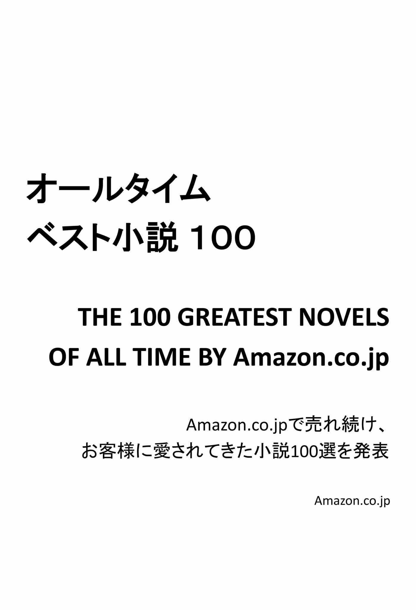

Amazon.co.jpは2000年11月1日に、日本で書籍のオンライン販売を開始しました。13年にわたる書籍の販売で蓄積した販売データ、カスタマーレビューのデータをはじめとする各種データをもとに、Amazon.co.jp独自の方法で、これだけは読んでおきたい「オールタイムベストブック」を選定しました。
ここに、第1弾「小説100」
を発表します。
このKindle版小冊子には、選定された本の内容紹介と「最も参考になったカスタマーレビュー」(2013年10月時点)を掲載しています。
読書ガイドとしていつも手元に置けるよう、電子書籍という形で刊行しましたので、新たな本との出会いや発見、読書の幅を広げる一助として活用いただければ幸いです。
2013年11月吉日
Amazon.co.jp
齋藤孝(明治大学文学部教授)
「オールタイムベスト小説100」は世界的な古典から最近の本まで、とてもバランスよくそろっていると思います。内容も重く難解な本から読みやすい本まで幅広いですね。個人的には米原万里さんの本が入っていたのはセンスがいいと思いましたし、ジョージ・オーウェルが2冊も入っているという点も現代社会を考える上で頼もしい気がしました。販売部数だけでなく、カスタマーレビューの評価も組み合わせて選出したことで、新旧・硬軟の良書が選ばれたのではないでしょうか。
ただし海外文学に関しては新しい作家が少ないのが気になりました。今の日本の文化全般に言えることですが、海外の文化へのアンテナの感度が鈍っているように感じます。世界にはすばらしい作家が大勢いるので、海外の新しい文学ももっと読んでほしいですね。
読書は人間を深めてくれるというのが私の持論。1冊の本を通して、自分よりはるかにレベルの高い人の世界観や知識・教養、想像力に触れることができ、全く新しい世界が開けてくることもあります。人生80年、90年の時代ですが、本を読めば長い人生を豊かに過ごすことができるでしょう。
何を読んでいいかわからない人は、この「100選」がよいガイドになると思います。読んだことのなかった作家やジャンルに挑戦してもいいでしょう。きっとみなさんの精神を充電させてくれる本がたくさんあるはずです。
齋藤孝(さいとうたかし)
1960年静岡生まれ。明治大学文学部教授。東京大学法学部卒。同大学院教育学研究科博士課程を経て現職。『身体感覚を取り戻す』（NHK出版）で新潮学芸賞受賞。『声に出して読みたい日本語』（毎日出版文化賞特別賞、2002年新語・流行語大賞ベスト10、草思社）がシリーズ260万部のベストセラーになり日本語ブームをつくった。著書に『読書力』『コミュニケーション力』『古典力』（岩波新書）『理想の国語教科書』（文藝春秋）『質問力』『現代語訳学問のすすめ』（筑摩書房）『雑談力が上がる話し方』（ダイヤモンド社）等多数。TBSテレビ「情報7days ニュースキャスター」等テレビ出演多数。NHK Eテレ「にほんごであそぼ」総合指導。(写真提供：草思社)
(※iPhone、 iPod Touch、 iPad用のKindleアプリからは、このリンクはご利用いただけません。「この操作は現在対応していません。」というメッセージが表示される旨、ご了承ください。)
・カスタマーレビューの数、平均カスタマーレビューの星の数、「最も参考になったカスタマーレビュー」の選定は、2013年10月時点のものです。
・「最も参考になったカスタマーレビュー」の日付は、そのカスタマーレビューが書かれた日付です。また、サイトに掲載された原文を抜粋しています。
・文庫版、単行本など異なる判型で出版された書籍の場合は、両方のデータを合算して選定しています。
・本書に記載している出版年月日は、2013年10月時点で販売・流通している判型の日付です。その本が初めて出版された日付ではありません。
・
のアイコンをクリックすると、その書籍のAmazon.co.jp商品詳細ページへとびます。
※iPhone、iPod Touch、iPad用のKindleアプリからは、このリンクはご利用いただけません。「この操作は現在対応していません。」というメッセージが表示される旨、ご了承ください。
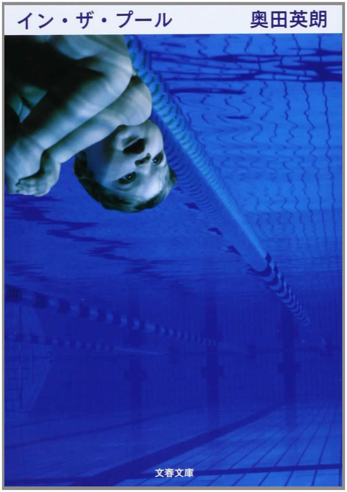
イン・ザ・プール
奥田 英朗(おくだ ひでお)
文藝春秋 2006/3/10

 (226)
(226)
「いらっしゃーい」。伊良部総合病院地下にある神経科を訪ねた患者は、甲高い声に迎えられる。色白で太ったその精神科医の名は伊良部一郎。プール依存症、陰茎強直症、妄想癖...訪れる人々も変だが、治療する医者のほうがもっと変。こいつは利口か、馬鹿か？ 名医かヤブ医者か。ヘンなビョーキの人々を描いた連作短篇集。
かさこ
2009/01/07
自意識過剰、神経過敏な現代人がちょっと踏み外すと、ここに出てくる「患者」になってしまう。読んでいて「自分も気をつけなきゃ」と思わせるような、ちょっとした現代人の心の狂いを、おもしろおかしく指摘してくれます。ぜひ現代人のみなさんに読んでほしい。この本を読めば、自分の心の病が重病になる前に気づけるかも。
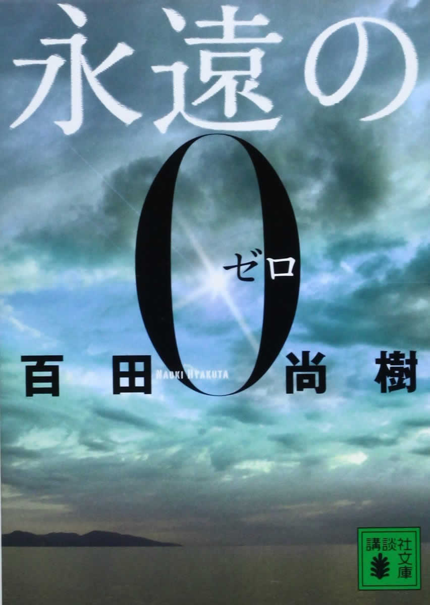
永遠の0
百田 尚樹(ひゃくた なおき)
講談社 2009/7/15
(1,077)
「娘に会うまでは死ねない、妻との約束を守るために」。そう言い続けた男は、なぜ自ら零戦に乗り命を落としたのか。終戦から60年目の夏、健太郎は死んだ祖父の生涯を調べていた。天才だが臆病者。想像と違う人物像に戸惑いつつも、ひとつの謎が浮かんでくる。記憶の断片が揃う時、明らかになる真実とは。男の絆、家族の絆。
sas273
2008/10/28
昭和3年生まれで少年飛行兵だった伯父にプレゼントしました。伯父は琵琶湖周辺の基地で練習をし、特攻機に乗らずに終戦を迎えたそうです。そんな伯父が孫から「じいちゃん、特攻隊ってテロなんだって」と云われた時、学校に抗議したそうです。「特攻隊は決して一般市民を狙ったものではない、テロと一緒にするな」と。
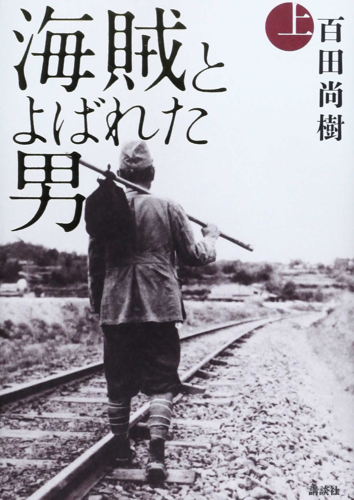
海賊とよばれた男
百田 尚樹(ひゃくた なおき)
講談社 2012/7/12
(243)
敗戦の夏、異端の石油会社・国岡商店を率いる国岡鐵造はすべてを失い、借金のみが残る。石油会社大手からは排斥され売る油もない。しかし社員を一人も馘首せず、旧海軍の残油集めなどで糊口をしのいでたくましく再生していく。石油を武器に変えて世界と闘った男とは何者なのか。実在の人物をモデルにした本格歴史経済小説。
丹波の赤鬼
 2012/07/17
2012/07/17
出光興産の創始者・出光佐三の自伝的小説。脚色されてはいるものの、大筋では歴史的事実に基づいているようだ。読みやすい文章で淡々と綴られている。日本人としての誇りを失いかけた戦後の沈滞した空気の中を切り裂いて進む人物に触れ、日本人として、「侍」としての生き方、誇りを考えさせてくれた作品です。痛快ですよ。
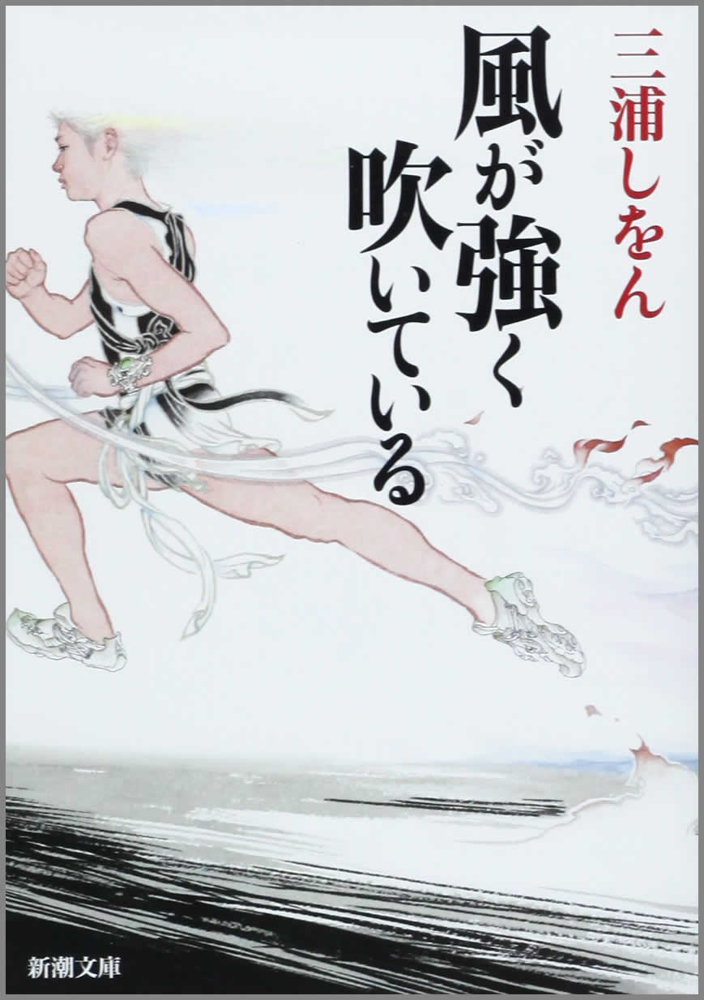
風が強く吹いている
三浦 しをん(みうら しをん)
新潮社 2009/6/27
(214)
箱根駅伝を走りたい。そんな灰二の想いが天才ランナー走と出会って動き出す。「駅伝」って何？ 走るってどういうことなんだ？ 十人の個性あふれるメンバーが、長距離を走ること(＝生きること)に夢中で突き進む。自分の限界に挑戦し、ゴールを目指して襷を繋ぐことで、仲間と繋がっていく。純度100％の疾走青春小説。
ズガコウサク
2006/10/20
ずっと昔ですが箱根駅伝に選手として走った事があります。最初は駅伝や長距離走をよく知らない作家が、想像だけで書いたのだろう程度にしか思っていませんでしたが、読み始めて、もちろんかなり無理な設定があることは事実なのですが、走るという行為、そして苦しさや喜び、そう云った深い部分までよく描いてくれています。
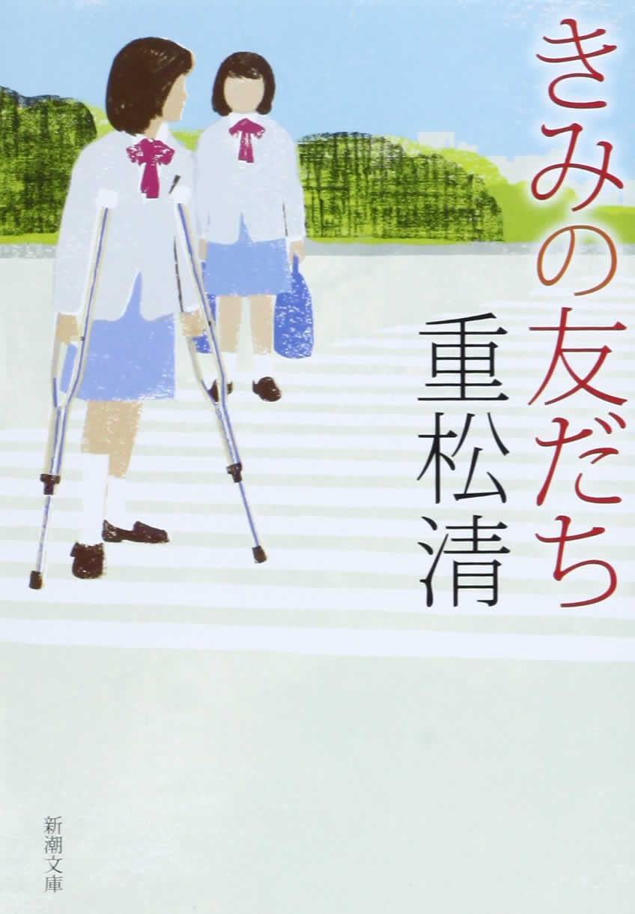
きみの友だち
重松 清(しげまつ きよし)
新潮社 2008/6/30
(98)
足の不自由な恵美ちゃんと病気がちな由香ちゃんは、ある事件がきっかけで、クラスのだれとも付き合わなくなった。学校の人気者、ブンちゃんは、デキる転校生、モトくんのことが、何となく面白くない...。優等生にひねた奴。弱虫に八方美人。それぞれの物語がちりばめられた、「友だち」のほんとうの意味をさがす連作長編。
ibo
2008/07/21
さまざまな「友だち」のかたちが描かれていますが、決してどのかたちが「正解」として描かれているわけでもありません。どの人物たちの思いも、痛いほど理解できてしまうのです。あとがきには重松氏による、最終章にまつわるエピソードが描かれています。これを読めたからこそ、文庫版も買って良かったなと実感できました。
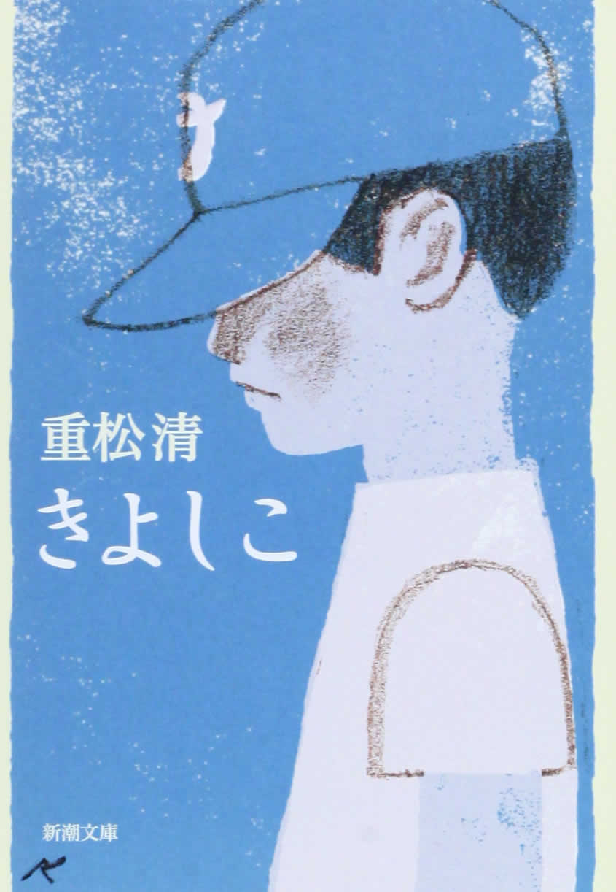
きよしこ
重松 清(しげまつ きよし)
新潮社 2005/6/26
(63)
ひとりぼっちの少年の名前はきよし。どこにでもいる少年。転校生。言いたいことが言えずに悔しかった。何でも話せる友だちが欲しかったが、夢の中の世界にしかいないことを知っていた。聖夜に出会ったふしぎな「きよしこ」は少年に言った。伝わるよ、きっと。大切なことを言えなかったすべての人に捧げたい珠玉の少年小説。
なおみ
2006/01/29
吃音に悩み、そのために言葉にならずに飲み込んだたくさんの言葉。そんな少年がクリスマスに出会った「きよしこ」。「ほんとうに伝えたいことだったら、伝わるよ、きっと」。この言葉は、少年だけじゃなくて、みんなに当てはまることではないかと思います。７話の短編を読み終えた後、あったかい気持ちになれると思います。
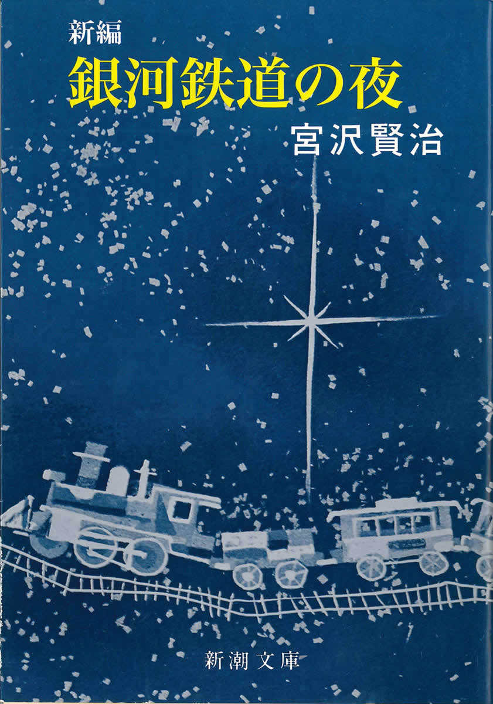
新編 銀河鉄道の夜
宮沢 賢治(みやざわ けんじ)
新潮社 1989/6/19
(54)
貧しく孤独な少年ジョバンニが、親友カムパネルラと銀河鉄道に乗って美しく哀しい夜空の旅をする、永遠に未完成の傑作である表題作や、『よだかの星』『セロ弾きのゴーシュ』など、イーハトーヴォの絢爛(けんらん)にして切なく多彩な世界に、『饑餓陣営』等を加えた14編を収録。賢治童話の豊饒(じょう)な醍醐(だいご)味をあますところなく披露する。
yanagir
2005/03/23
子どもの頃は「星座をかけめぐる幻想的でかなしい汽車旅物語」という印象だったが、賢治の享年を過ぎて改めて読み返すと、賢治の考えの深さに思わず背筋が伸びた。賢治の没後に出版されたこの童話は、「ほんとうの幸せとは何だろう」と考える世界中の人々の魂を揺さぶりつづける、日本を代表する童話作家の最高傑作である。
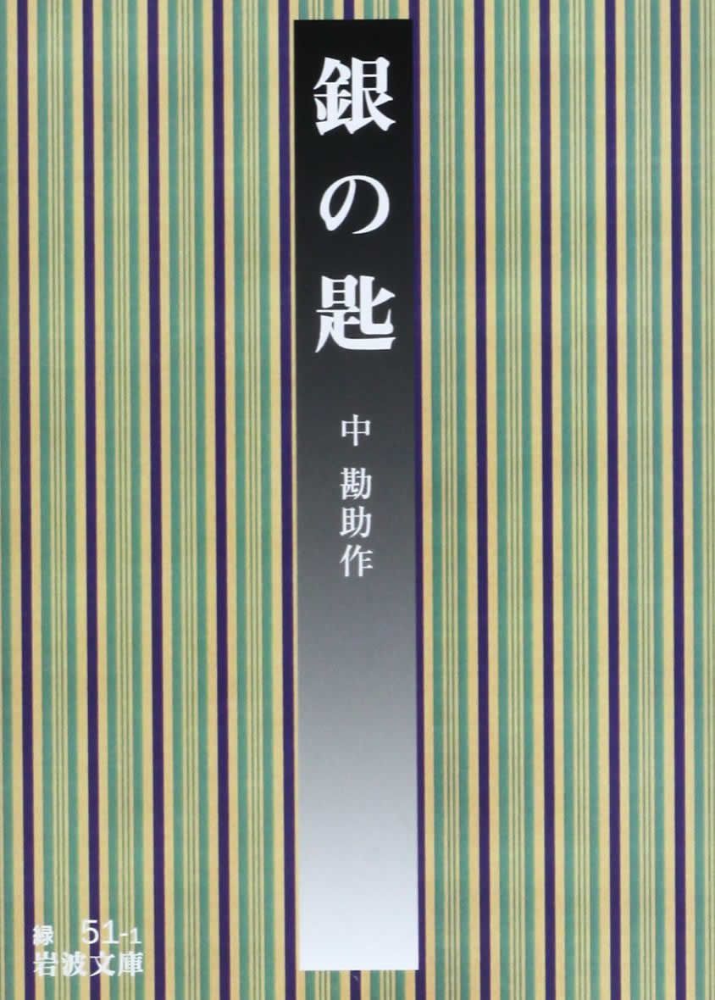
銀の匙
中 勘助(なか かんすけ)
岩波書店 1999/5/17
(56)
なかなか開かなかった、古い茶箪笥の抽匣(ひきだし)から見つけた銀の匙。伯母さんの限りない愛情に包まれて過ごした、少年時代の思い出を、中勘助(1885-1965)が自伝風に綴(つづ)ったこの作品には、子ども自身の感情世界が素直に描きだされている。漱石が未曾有(みぞう)の秀作として絶賛して、その推薦で東京朝日新聞に連載された名作。
Yaginuma
2007/07/21
愛する伯母との愛情溢れる日々、優秀な兄との相克、記憶に刻まれている小さく細々とした物たち。それが単なる追想で終わっていないのは、執筆時に20代後半の作家が、記憶の中の幼年時代を生きていたからです。大人の言葉で子供の世界をあるがままに鮮やかに蘇らせたところが、稀有で賛嘆すべきところではないでしょうか。
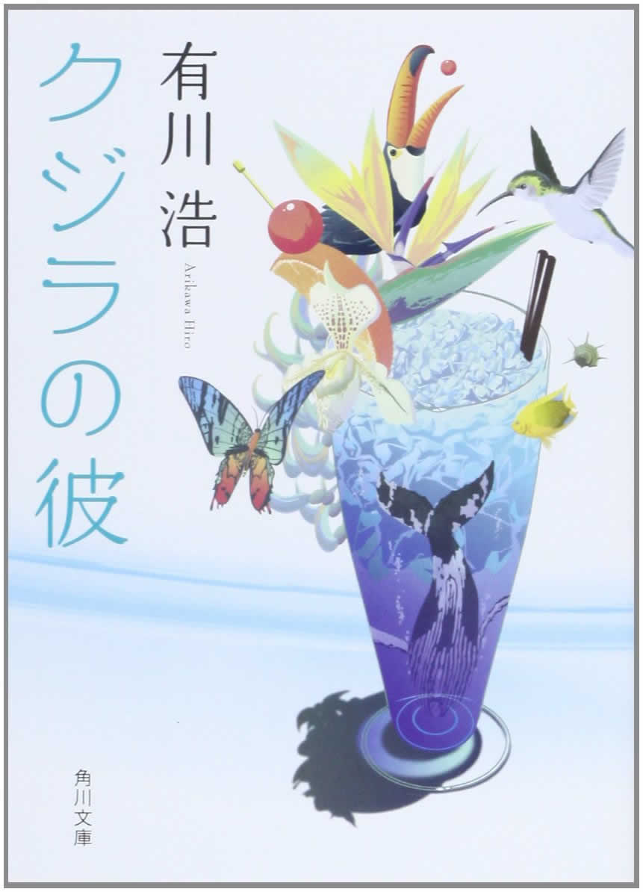
クジラの彼
有川 浩(ありかわ ひろ)
角川書店(角川グループパブリッシング) 2010/6/23
(79)
『浮上したら漁火がきれいだったので送ります』。彼からの2か月ぶりのメールだった。聡子が出会った彼は潜水艦乗り。いつ出かけていつ帰ってくるのかわからない。そんなクジラの彼とのレンアイには、いつも7つの海が横たわる。表題作をはじめ『空の中』『海の底』の番外編も収録した、男前でかわいい彼女たちの6つの恋。
りか
2007/02/09
大人になると仕事とか大変だし、毎日疲れるし、そんじょそこらにきゅんとする出来事なんか転がってなくてさ。そんなやさぐれた気持ちも吹っ飛ぶ、目も覚めるような甘さ！読んでる最中は口の中で転がすようにその甘さを味わえる。昔コバルト文庫を読んできゅんとしていた元女の子も、存分にご賞味あれ。味は甘くて保証付き。
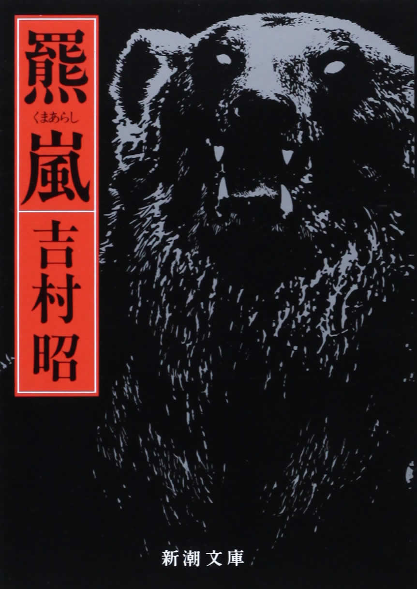
羆嵐
吉村 昭(よしむら あきら)
新潮社 1982/11/29
(63)
北海道天塩山麓の開拓村で、冬眠の時期を逸した一頭の羆(くま)が、2日間に6人の男女を殺害した日本獣害史上最大の惨事は、大正4年12月に起こった。鮮血に染まる雪、羆を潜める闇、人骨を齧(かじ)る不気味な音。自然の猛威の前でなす術のない人間と、ただ一人沈着に羆と対決する老練な猟師の姿を浮彫りにするドキュメンタリー長編。
青頭倶楽部
2010/08/30
羆の迫力や威圧感は、経験した者以外には到底推し量ることはできない。実に恐い小説であるが筆致は淡々としており、それが却って恐怖を高める効果を生んでいる。この日本最悪の獣害事件の事前知識はなかったため、読み進めながら、いつ羆が出てくるかと気が気でなく、映画｢ジョーズ｣のような恐怖感を味わうことになった。
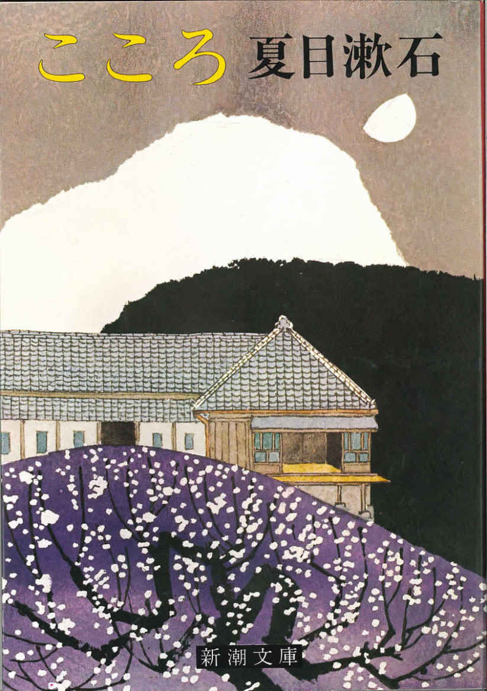
こころ
夏目 漱石(なつめ そうせき)
新潮社 2004/3/1
(306)
鎌倉の海岸で学生だった私は、一人の男性と出会う。不思議な魅力のその人は私になかなか心を開かず、謎のような言葉で惑わせる。やがて私に分厚い手紙が届いたとき、先生はもはやこの世の人ではなかった。遺された手紙から明らかになる先生の人生の悲劇。それは親友とともに一人の女性に恋をしたときから始まったのだった。
castro KONDO "Proffesional Engineer"
2004/09/21
20年余りを経て読み返してみた。偉大なる巨人「夏目漱石」の晩年の作品がこんなに読みやすく、ある意味明快にテーマを提示していることにまず驚いた。三部に分かれている中で、私が心詰まらせたのは「両親と私」であった。人の親になり、世間の波に擦り切れるまで揉まれると「両親と私」の切なさが胸に痛いくらいである。
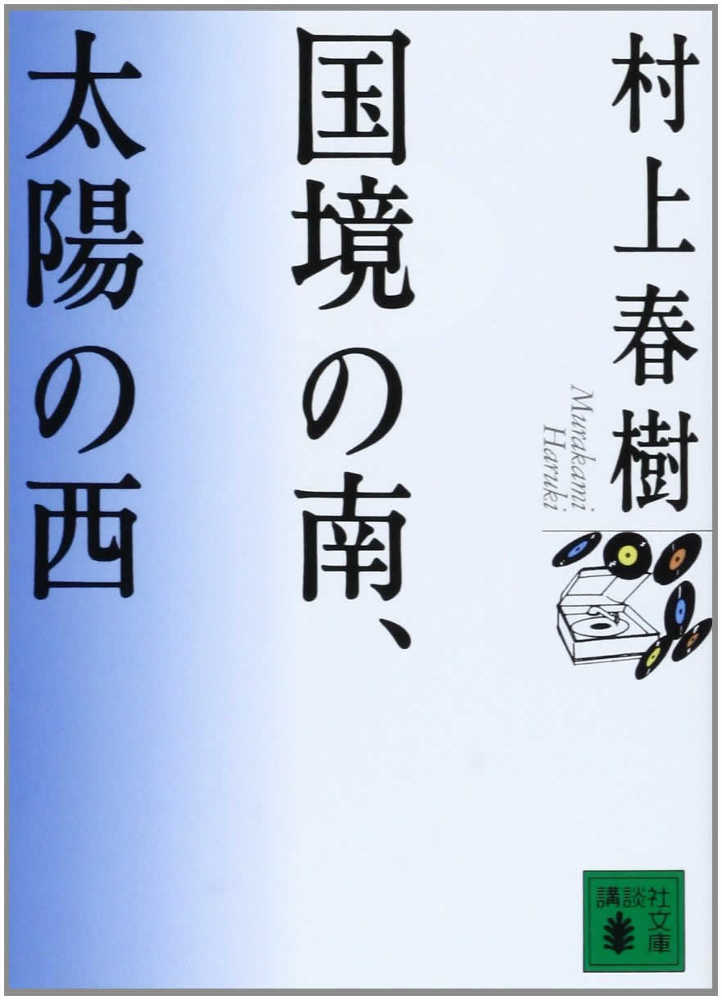
国境の南、太陽の西
村上 春樹(むらかみ はるき)
講談社 1995/10/4
(128)
一人っ子としての育ち方にある欠落を感じていた僕に、小学校時代、同じく一人っ子の女の子が転校してきて仲良くなる。25年後の37歳の時、「ジャズを流す上品なバー」を経営する、絵に描いたように幸せな僕の前に、かつて好きだったその彼女が現れ、激しい恋におちていく。日常に潜む不安をみずみずしく描いた長編小説。
33
2004/07/14
この作品は、ここ四年くらい年に一度通読しているんですが、何度読んでも、話がどういう風に展開していって、どういう風に落ち着いていくのかを知っていたとしても、あるいは何度同じエピソードを追っても、飽きがきません。もちろん村上春樹さんの文章のポップさやストーリーテリングの巧みさというのはあるんでしょうが。

三匹のおっさん
有川 浩(ありかわ ひろ)
文藝春秋 2012/3/9
還暦ぐらいでジジイの箱に蹴り込まれてたまるかと、定年を迎えて一念発起した剣道の達人・キヨ、居酒屋を息子に任せられるようになった柔道の達人・シゲ、遅くできた一人娘を溺愛する町工場経営者で機械をいじらせたら右に出るものナシの頭脳派・ノリ。かつての悪ガキ三人組が結成した自警団が、ご町内にはびこる悪を成敗。
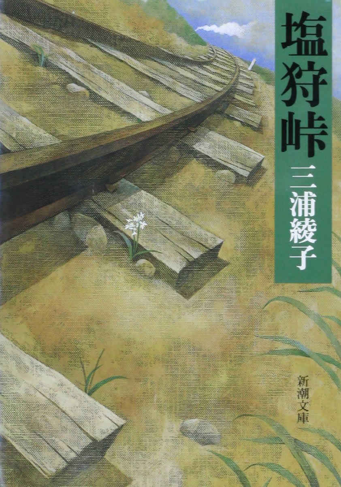
塩狩峠
三浦 綾子(みうら あやこ)
新潮社 1973/5/29
(137)
結納で札幌へ向かう鉄道職員・永野信夫の乗った列車は、塩狩峠の頂上にさしかかった時、突然客車が離れて暴走をし始めた。信夫は飛びつくようにハンドブレーキに手をかけた。明治末年、北海道旭川の塩狩峠で、自らを犠牲にして大勢の乗客の命を救った一青年の、愛と信仰に貫かれた生涯を描いた、生きる意味を問う長編小説。
Takeko
2001/03/27
高校時代にこの本と出会い、こんなにも涙を流し、心を揺さぶられたのは初めての経験でした。宗教的なものに関心がない方をも引き込む力があると思います。本当の愛とは、生きるとはどういうことなのか、深く考えさせられる一冊です。三浦綾子作品を読まれた事がない方、是非この本からスタートしてみてはいかがでしょうか。
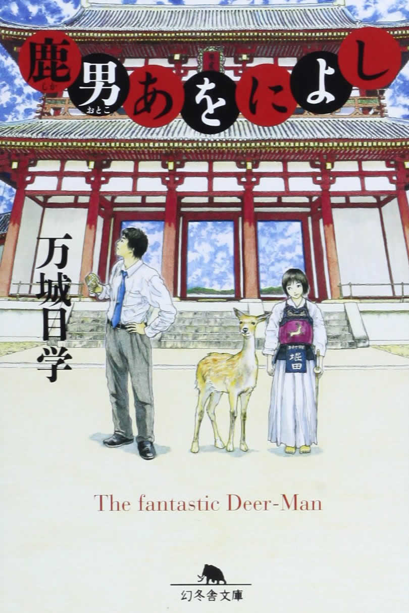
鹿男あをによし
万城目 学(まきめ まなぶ)
幻冬舎 2010/4/1
(115)
大学の研究室を追われた28歳のおれ。失意の彼は教授の勧めに従って奈良の女子高に赴任する。ほんの気休めで、英気を養って研究室に戻るはずだった。渋みをきかせた中年男の声の鹿が話しかけてくるまでは。「さあ、神無月だ。出番だよ、先生」。彼に下された謎の指令とは。古都を舞台に展開する前代未聞の救国ストーリー。
平隊士
2007/04/21
前作『鴨川ホルモー』と同様「なんじゃそりゃ？」と、思わず書店で手を伸ばさずにはいられない、奇妙なタイトルと可愛らしい表紙絵の組み合わせが素晴らしい。巧みな風景描写で実在する土地の魅力や雰囲気を引き出しつつ、マニアックになり過ぎない程度に歴史ネタや神話ネタを物語に落とし込むのが、この作者は本当に巧い。
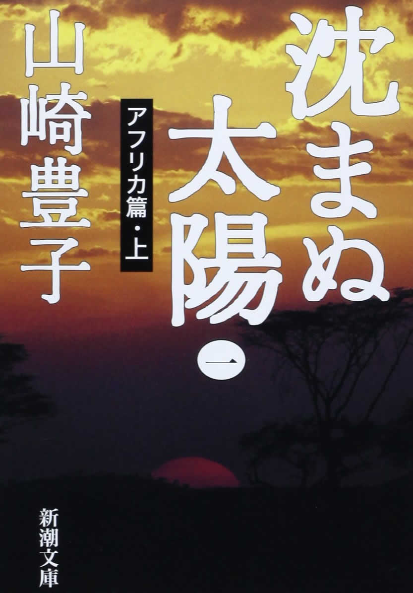
沈まぬ太陽〈1〉アフリカ篇(上)
山崎 豊子(やまさき とよこ)
新潮社 2001/11/28
(107)
広大なアフリカのサバンナで巨象に狙いをさだめ猟銃を構える一人の男、恩地元は日本を代表する企業・国民航空社員。エリートとして将来を嘱望されながら、内規を無視した「流刑」に耐える日々は十年に及ぼうとしていた。人命をあずかる企業の非情、その不条理に不屈の闘いを挑んだ男の運命。人間の真実を問う壮大なドラマ。
総次郎
2008/08/04
出版にあたっても壮絶なストーリーがあったそうで、山崎豊子氏の連載依頼に多くの出版社がやってきたが、日航の内情を描いた作品だと分かると、みな腰が引けて逃げてしまった。新潮社だけが会社を説得でき、週刊新潮での連載が始まる。本を読んで誰が悪いではなく、人間の本質や根本的なものから見直していきたいと思った。
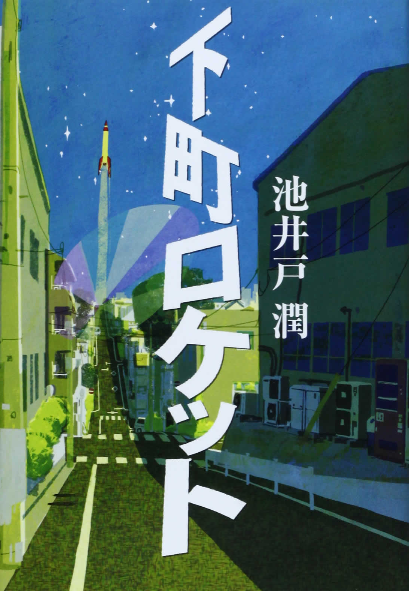
下町ロケット
池井戸 潤(いけいど じゅん)
小学館 2010/11/24
(224)
主人公・佃航平は宇宙工学研究の道をあきらめ、実家の佃製作所を継いでいたが突然の取引停止、さらに特許侵害の疑いで訴えられるなど、大企業に翻弄(ほんろう)され、会社は倒産の危機に瀕していた。特許をめぐり見下した態度をとる大企業に対し、佃製作所の若手社員は強気な姿勢で日本のものづくりを担ってきた町工場の意地を見せた。
Ryu
2010/11/30
元ロケットエンジン研究者が失敗の責任を取り研究所をやめた後、親の町工場を継いだところから始まるビジネス小説です。この企業がもつエンジン部品の特許を巡って、大手企業がおりなす策略や圧力のなか、社長と社員が力を合わせて乗り切る姿がリアルに描かれていて、時間がたつのを忘れさせてくれるほど引き込まれました。
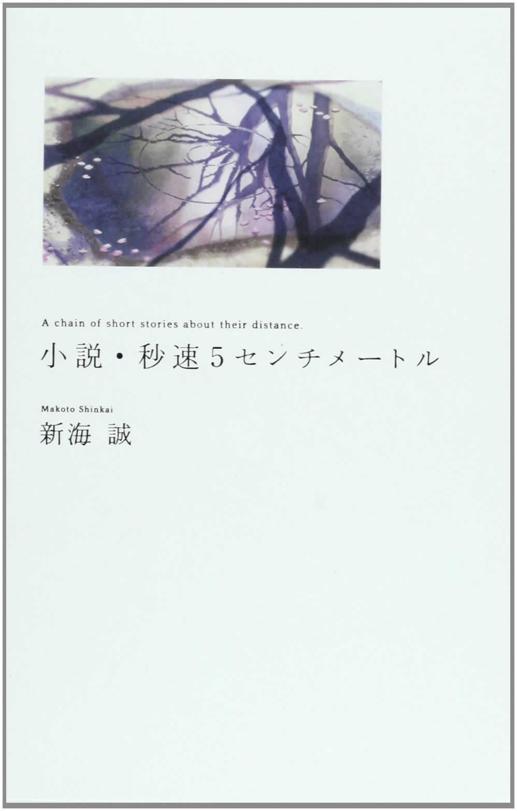
小説・秒速5センチメートル
新海 誠(しんかい まこと)
メディアファクトリー 2007/11/14
(69)
アニメーション作品『ほしのこえ』で鮮烈なデビューを飾った、映画監督・新海誠が、連作短編アニメーション『秒速5センチメートル』を自ら初の小説化。映画では語られなかった彼の、そして彼女たちの心象風景が、新海誠自身の言葉によって、やさしく、繊細に綴られる。ひとりの少年を軸に描かれる、3つの連作短編を収録。
TAM
2008/04/01
最初は映画館で映像を見ました。1年たってから、この小説を読みました。文章だからこそ描けるものが丁寧に描かれていると思います。映像で描かれていない部分も描かれています。本作品は、映像の小説版ですが、お互いを補完する位置づけになっていると思います。また、少し違った視点で描かれた物になっていると思います。
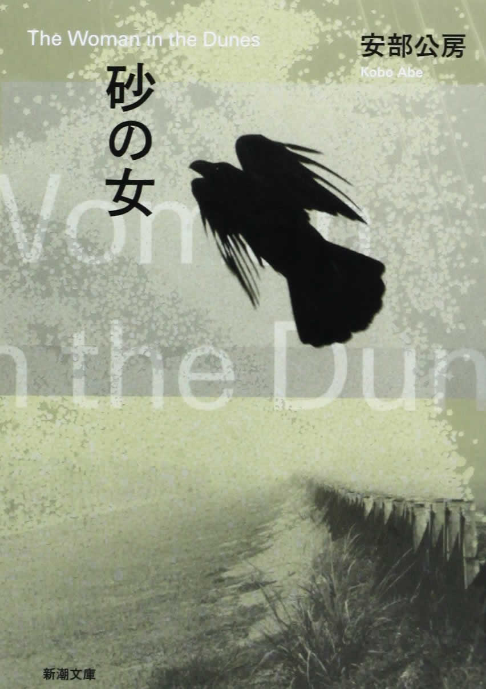
砂の女
安部 公房(あべ こうぼう)
新潮社 2003/3/1
(125)
砂丘へ昆虫採集に出かけた男が砂穴の底に埋もれていく一軒家に閉じ込められる。考えつく限りの方法で脱出を試みる男。家を守るために男を穴の中にひきとめておこうとする女。穴の上から男の逃亡を妨害し、二人の生活を眺める村の人々。ドキュメンタルな手法、サスペンスあふれる展開で、人間存在の極限の姿を追求した長編。
アルムオンジ
2005/07/03
サスペンスとしても現代社会に対してありもしない希望と自由の幻想で成り立っていると批判する寓意的小説としても優れている。砂の中での思い通りにならない生活と、望めば何でも手に入るように見える現代社会、「優劣はどちらだ」と。砂が絡み付くようで、シャワーを浴びたくなる描写に嫌悪を感じながらも引き込まれます。
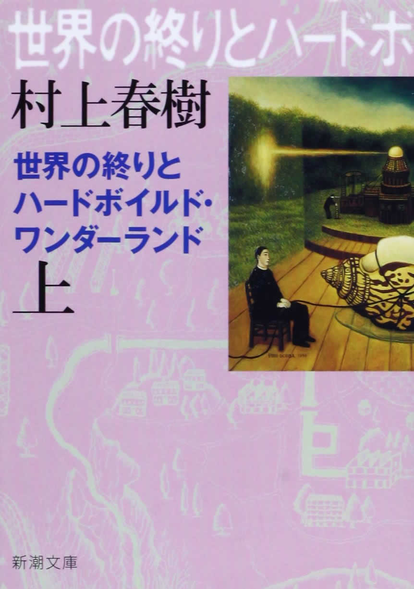
世界の終りとハードボイルド・ワンダーランド 上巻
村上 春樹(むらかみ はるき)
新潮社 2010/4/8
(113)
外界との接触がまるでない街で、一角獣たちの頭骨から夢を読んで暮らす僕の物語「世界の終り」。意識の核に或る思考回路を組み込まれた私が、その回路に隠された秘密を巡って活躍する「ハードボイルド・ワンダーランド」。静寂な幻想世界と波瀾万丈の冒険活劇の二つの物語が、同時進行して織りなす、村上春樹の不思議の国。
シロウサ
2010/11/03
2つのストーリーが最初は何で交互に出てくるのかと思い、その内に何か関係ありそうだと思い、最後に繋がるけれども、それがどんな繋がりなのかを読後も考えされられてしまう物凄い作品。どうしてこんなストーリーを考え付くのか想像を絶するものがあり、ハルキストのみならず文学好きの人にはたまらない作品だと思います。
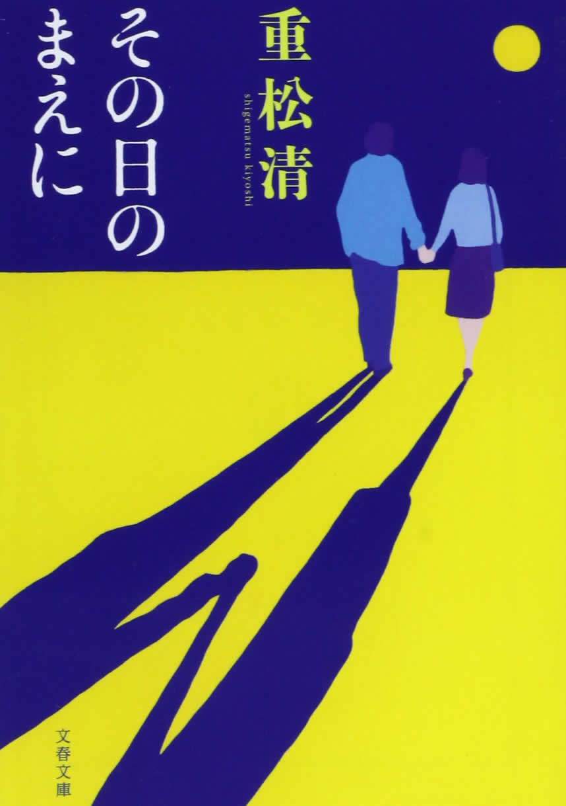
その日のまえに
重松 清(しげまつ きよし)
文藝春秋 2008/9/3
(173)
僕たちは「その日」に向かって生きてきた。男女が出会い、夫婦になり家族をつくって幸せな一生なのか。不意に断ち切る家族の死。消えゆく命を前にして、いったい何ができるのだろうか。死にゆく妻を、静かに見送る父と子らを中心に、それぞれのなかにある生と死、そして、日常のなかにある幸せの意味を見つめる連作短編集。
花田龍犀
2005/08/08
またヤラレマシタ。重松ワールド、深すぎます。現代作家で家族モノを書かせたら、右に出る者はいないんじゃないかな？ 生きることの尊さ、生まれてから現在まで、生きていることの素晴らしさを深く深く感じさせられました。読み手それぞれの感じ方がありますが、この本は間違いないです。明日からの生き方、変わりますよ。
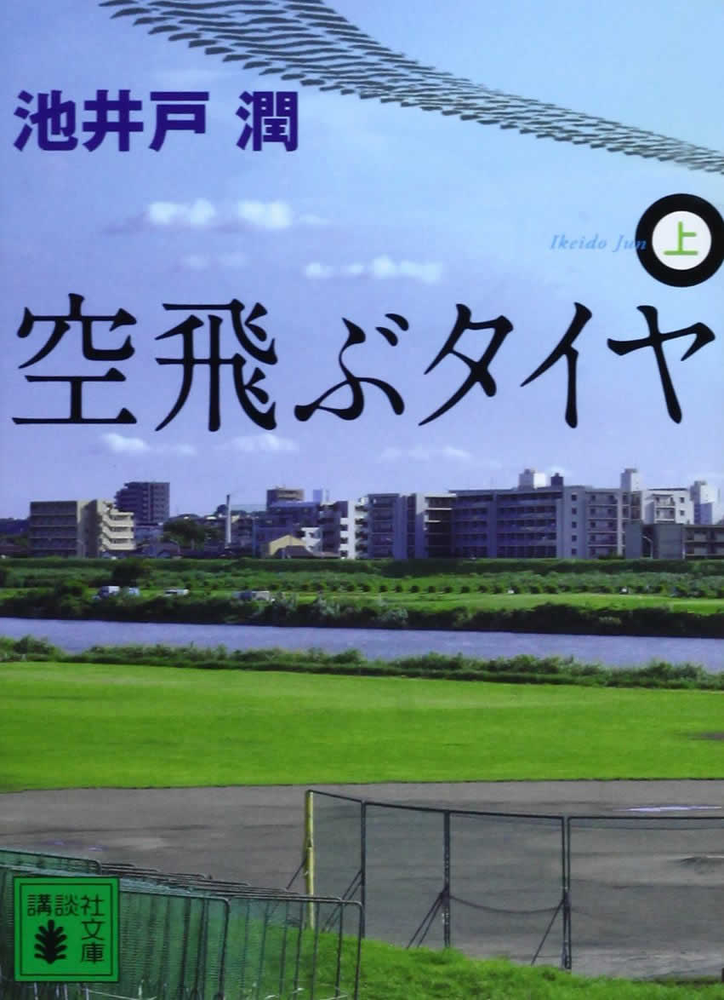
空飛ぶタイヤ(上)
池井戸 潤(いけいど じゅん)
講談社 2009/9/15
(92)
トレーラーの走行中に外れたタイヤは凶器と化し歩行者の母子を直撃した。ホープ自動車が出した「運送会社の整備不良」の結論に納得できない運送会社社長の赤松徳郎。真相を追及する赤松の前を塞(ふさ)ぐ大企業の論理。家族も周囲から孤立し、会社の経営も危機的状況に陥り、絶望しかけた赤松に記者・榎本が驚愕の事実をもたらす。
平和
2009/10/10
星を10個つけたいくらい最高評価の本で、期待を全く裏切らないものでした。三菱自動車のリコール隠し事件を題材にしており、超大財閥企業と中小企業の運送会社との闘争という構図です。筆者は人命よりも社内的な保身のほうが重要な大企業体質を痛烈に批判し、大企業内の常識は世間の非常識ということにも言及しています。
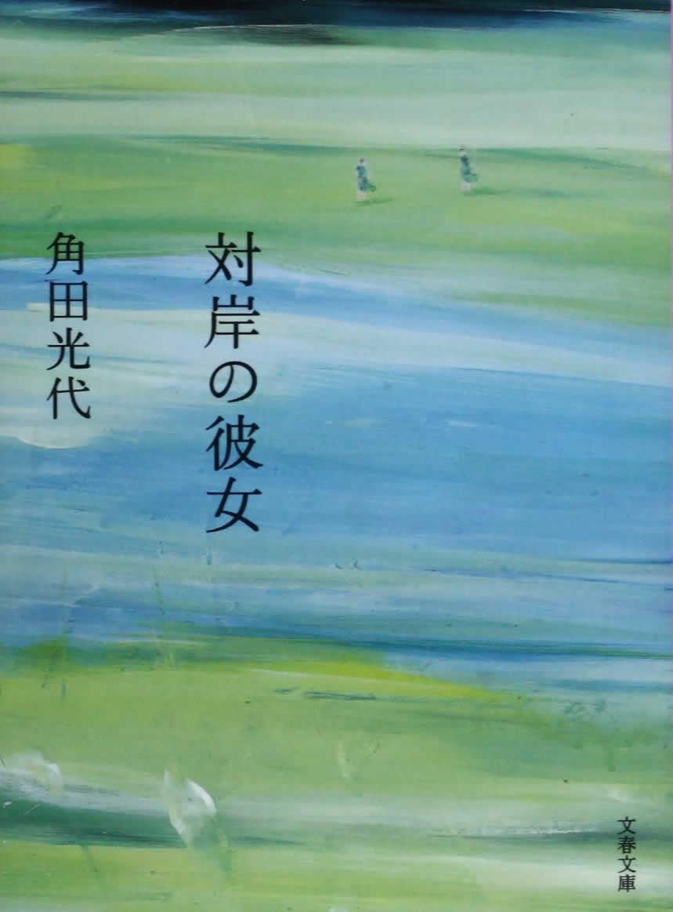
対岸の彼女
角田 光代(かくた みつよ)
文藝春秋 2007/10/1
(203)
小夜子は葵にスカウトされ、ハウスクリーニングの仕事を始める。既婚、子持ちの「勝ち犬」小夜子と、独身、子なしの「負け犬」葵、二人の女性の友情は成立するのか。結婚する・しない、子どもを持つ・持たない、それだけのことで、なぜ女同士、わかりあえなくなるんだろう。多様化した現代を生きる女性の、友情と亀裂を描く。
yukka1027
2004/12/22
日々の家事、育児、仕事、雑事に忙殺され、家庭という殻の中で、ママ友という名の仮想友人に囲まれた小夜子のような主婦はたくさんいると思う。そしてまた、葵のような人も、きっといると私は思いたい。恋人や夫よりも、友達を見つけることのほうがずっと難しいと感じているこのごろ、この本は少しだけ支えになってくれた。
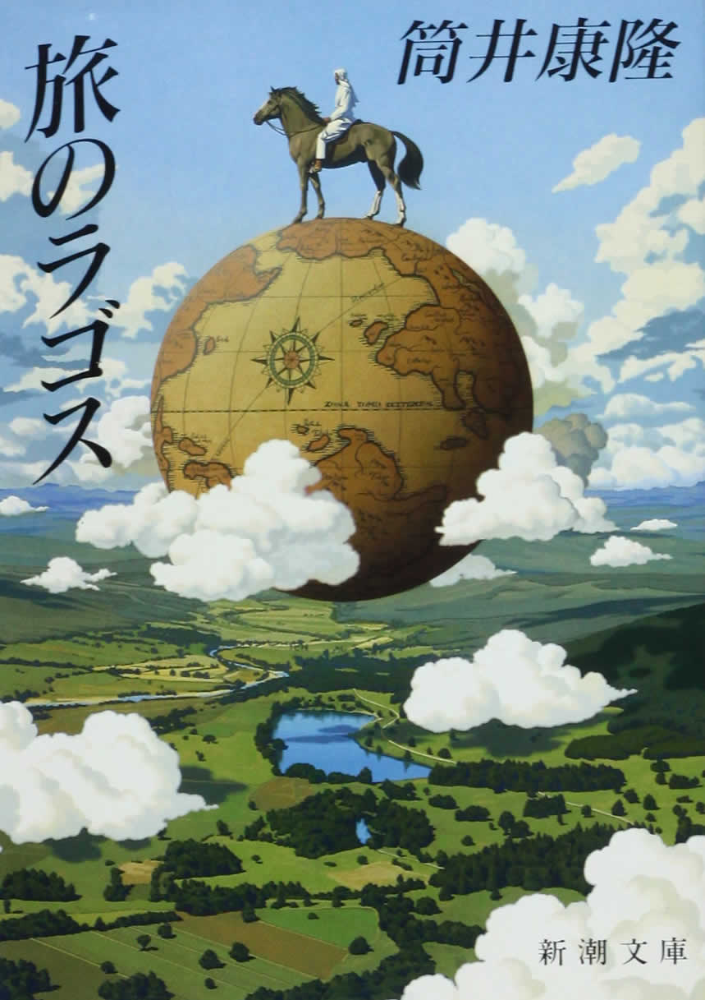
旅のラゴス
筒井 康隆(つつい やすたか)
新潮社 1994/3/1
(55)
突然高度な文明を失った代償として人々が超能力を獲得しだした「この世界」で、ひたすら旅を続ける男ラゴス。集団転移、壁抜けなどの体験を繰り返し、二度も奴隷の身に落とされても、旅をするラゴスの目的は何か。異空間と異時間がクロスする不思議な物語世界に人間の一生と文明の消長をかっちりと構築した爽快な連作長編。
MR.マスター
2008/05/08
読了後の感想は「日本人作家によって日本語で書かれたこと自体が奇跡」だ。本作が筒井の数多ある作品の中でも異彩を放っている点については異論を挟まないだろう。舞台はSFファンタジーの世界で、要は一人の男の青年時代から老年時代までの時間を印象に残るエピソードを交えながら淡々と冷静に書き連ねた人生物語である。
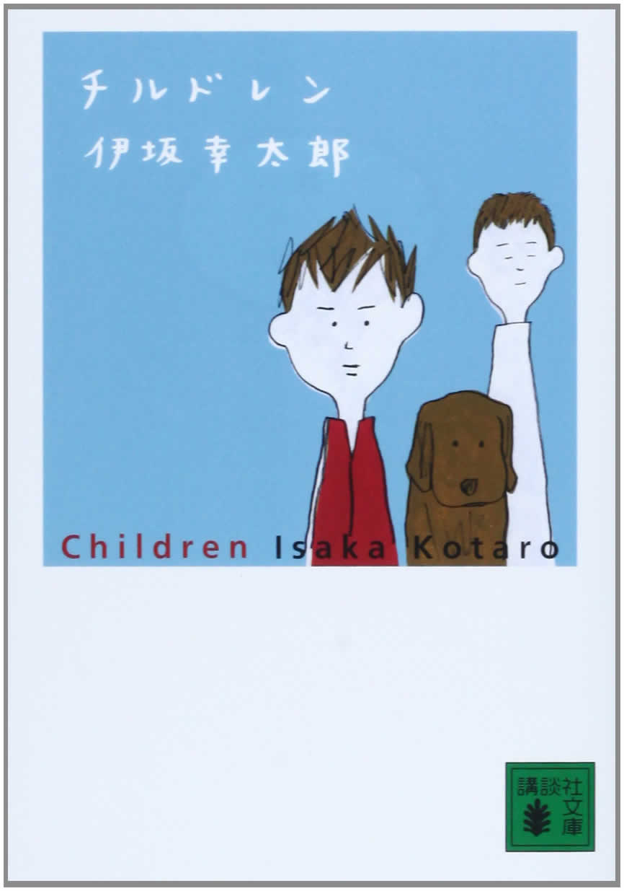
チルドレン
伊坂 幸太郎(いさか こうたろう)
講談社 2007/5/15
(152)
「俺たちは奇跡を起こすんだ」。独自の正義感を持ち、いつも周囲を自分のペースに引き込むが、なぜか憎めない男、陣内。彼を中心にして起こる不思議な事件の数々。何気ない日常に起こった五つの物語がひとつになったとき、予想もしない奇跡が降り注ぐ。ばかばかしくて恰好よい、ちょっとファニーで、心温まる連作短編の傑作。
ポロロッカ
2007/05/20
中心となる人物の言動や性格、やや気取った雰囲気が丁寧に描かれていて、ただの「日常の謎」でおわっていないのが楽しいところです。連作ですが順に繋がっているのではなく、それぞれの作品の時間が前後しているのが特徴的。読んでいるうちにその繋がりに自然と気づきニヤリとさせられます。読みやすくおすすめの1冊です。
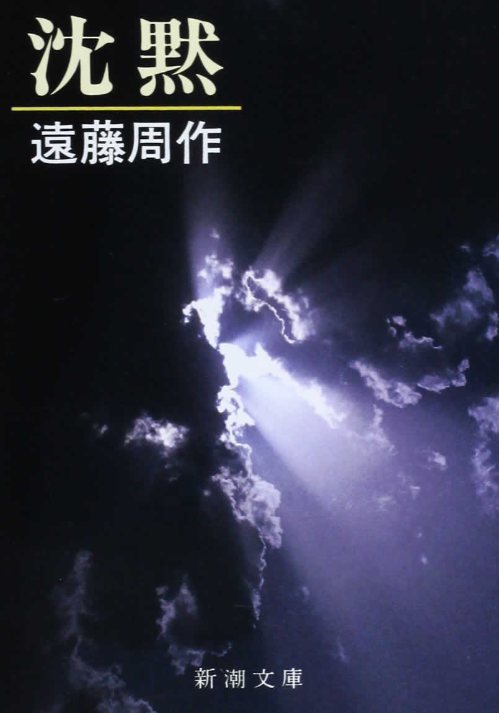
沈黙
遠藤 周作(えんどう しゅうさく)
新潮社 1981/10/19
(121)
島原の乱の鎮圧後、キリシタン禁制の厳しい日本に潜入したポルトガル人司祭ロドリゴは、信徒たちへの残忍な拷問と悲惨な殉教のうめき声に接して苦悩し、背教の淵に立たされる。神の存在、背教の心理、西洋と日本の思想的断絶など、キリスト信仰の根源的な問題を衝き「神の沈黙」という永遠の主題に切実な問いを投げかける。
柴犬
2005/11/09
キリスト教の話だと思わず先入観なしで読んで欲しいです。文章は読みやすいですが、ただツライです。私はキチジローに強く共感しました。私も弱い人間なので、彼の弱さが自分と重なってやりきれず哀れです。長崎が舞台で言葉がわかりにくい部分もあるかもしれませんが、私には懐かしくさらに農民達が身近に感じられました。
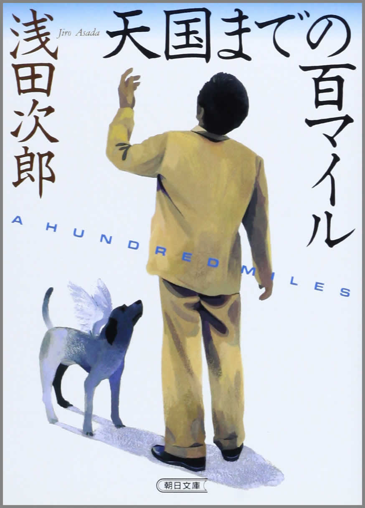
天国までの百マイル
浅田 次郎(あさだ じろう)
朝日新聞社 2000/10/1
(71)
バブル崩壊で会社も金も失い、妻子とも別れたろくでなしの中年男城所安男。主治医から心臓病を患う母の病状の深刻さを告げられ、安男は愕(がく)然とする。天才的な心臓外科医がいるというサン・マルコ病院をめざし、奇跡を信じて100マイルの道のりをひたすら駆ける。親子の切ない情愛、男女の哀しい恋模様を描く、感動の物語。
kiki777777
2003/06/20
凄すぎます。本を読んで泣くことなんて、そんなにないのにやられました。眠くなりたくて読み始めたのに、明け方にはぼろぼろでした。でもすっきりした読後感で、久しぶりに前向きでさわやかな気持ちのいい朝を迎えられました。ベストセラーはあえて避けるようなサブカル人間も、だまされたと思って1回読んでみてください。
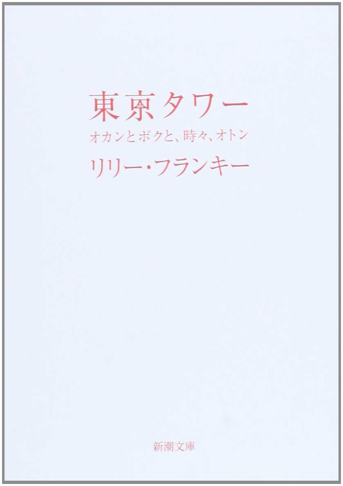
東京タワー―オカンとボクと、時々、オトン
リリー・フランキー(りりー・ふらんきー)
新潮社 2010/6/29
(466)
オカン。ボクの一番大切な人。ボクのために自分の人生を生きた人。四歳のときにオトンと別居、筑豊の小さな炭鉱町でボクとオカンは一緒に暮らした。やがてボクは上京し、東京でボロボロの日々。還暦を過ぎたオカンは、ひとりガンと闘っていた。「東京でまた一緒に住もうか?」大切な人との記憶、喪失の悲しみを綴った傑作。
パタ
2011/05/02
私はリリーフランキーを知りません。映画になり流行ったこの本を手にとったのは、装丁のシンプルさに惹かれたからでした。母への愛にあふれている作品。私は自分の親をこんなにまで愛することができるでしょうか。日常を日常として日々すごすことの幸せは子供のころにはわかりません。年を経て、改めてその幸せを感じます。
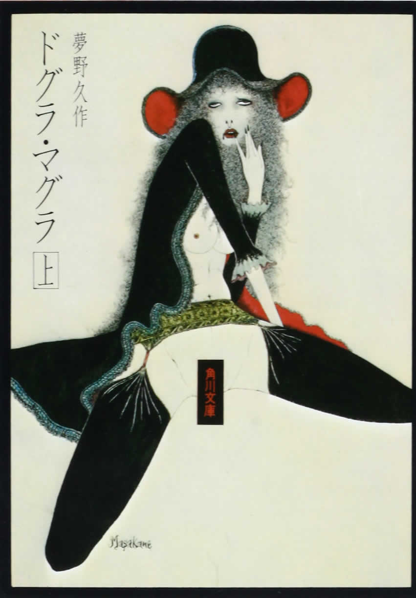
ドグラ・マグラ (上)
夢野 久作(ゆめの きゅうさく)
角川書店 1976/10/1
(74)
昭和10年1月、書き下ろし自費出版された、夢野久作の代表作とされる小説。著者は本作を発表した１年後に死去した。狂人の書いた推理小説という異常な状況設定の中に、著者の思想、知識が集大成されている。「日本一幻魔怪奇の本格探偵小説」とうたわれた、歴史的一大奇書。日本探偵小説三大寄書のひとつに数えられている。
yamamusi
2005/06/16
食べ物でいうならば「珍味」なのです。巧い文章が読みたい、いい話が聞きたい、感動したい、涙を流したい、知識が欲しい、金を払ったんだから、それなりのものが欲しいと云う人が読むべきものではない。「これはマズイ」「面白くない」などと云う人がいても、何も驚きはしないし「これは絶対面白いから読め」とも勧めない。
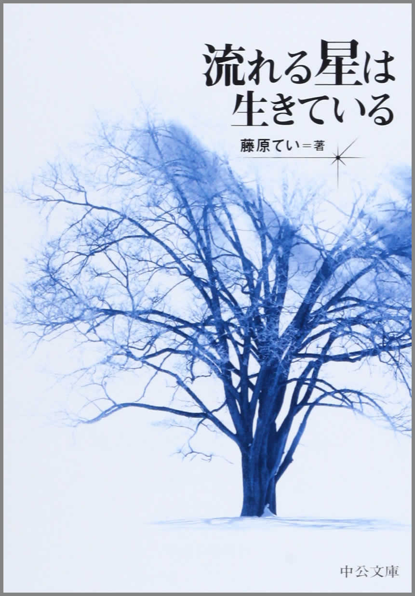
流れる星は生きている
藤原 てい(ふじわら てい)
中央公論新社 2002/7/25
(56)
昭和20年8月9日、ソ連参戦の夜、満州新京の観象台官舎。夫と引き裂かれた妻と愛児三人の言語に絶する満州からの壮絶な脱出行が始まった。敗戦下の悲運に耐えて生き抜いた一人の女性の苦難と愛情の厳粛な記録。戦後空前の大ベストセラーとなり、夫・新田次郎氏に作家として立つことを決心させた壮絶なノンフィクション。
rock-c
2008/05/07
1945年の敗戦後、こんな凄いことが中国、北朝鮮で実際にあったのですね。こういう記録がないと私たちの代で消え去ってしまう過去の事実。無知な私は敗戦即解放、淡々と引き上げたと思っていましたが、こんなに凄まじく死ぬ思いで引き上げてきたとは全く知りませんでした（この本で大半の人は亡くなっているのですが）。
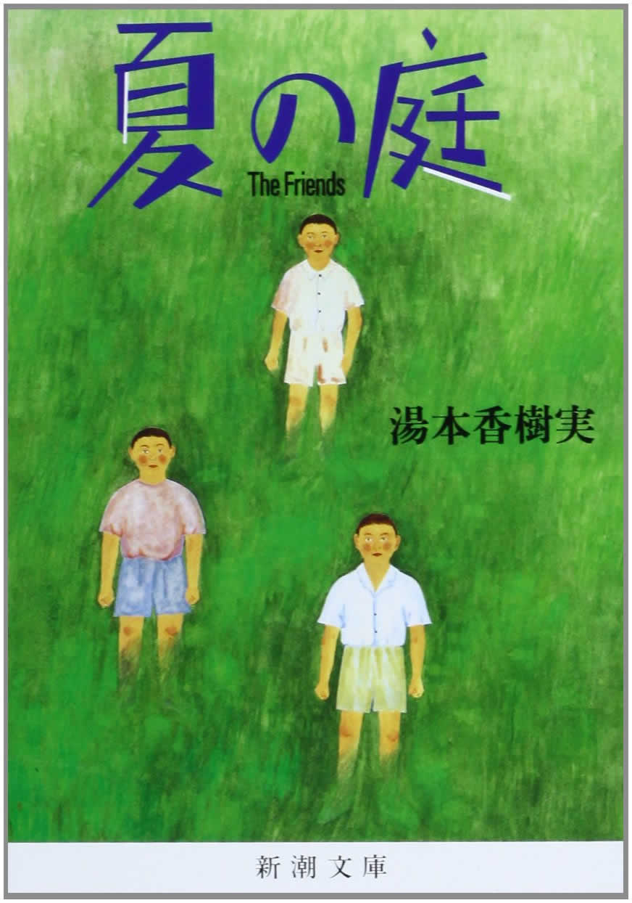
夏の庭―The Friends
湯本 香樹実(ゆもと かずみ)
新潮社 1994/3/1
(155)
ぼくらは町外れに暮らす生ける屍(しかばね)のような老人が死ぬ瞬間を、この目で見るために「観察」し始めた。ぼくらの好奇心は、日ごと高まるけれど、不思議と老人は元気になっていくようだ。少年たちの「観察」は、老人との深い交流へと姿を変え始めていた。喪われゆくものと、決して失われぬものに触れた少年たちを描く清新な物語。
青山泰教
2001/04/26
無邪気で残酷な好奇心から始まった出会いが、１つの幸せと大きな悲しみに帰結し、夏の光にさらされた少年時代が終わる。本のページ数が残り少なくなり、物語の終わりが近づいてきて、この魅力的な登場人物たちとの別れが、非常に残念に思えてきた。そしてラスト。通勤途中の地下鉄で、僕は涙をこらえるのにとても苦労した。
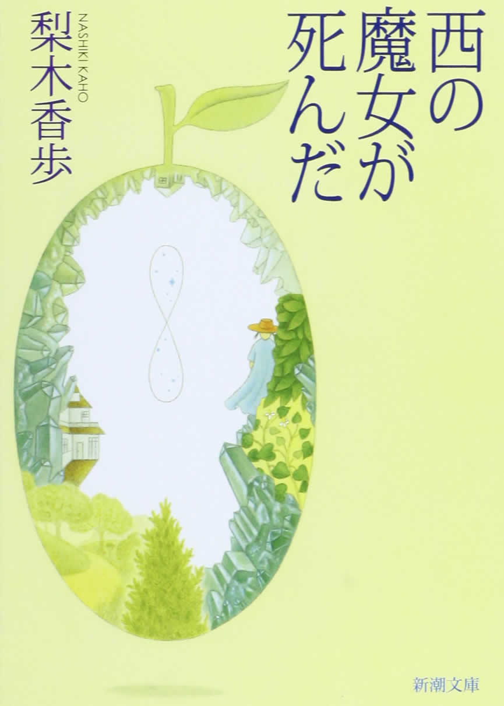
西の魔女が死んだ
梨木 香歩(なしき かほ)
新潮社 2001/8/1
(311)
中学に進んでまもなく、学校へ足が向かなくなった少女まいは、季節が初夏へと移り変るひと月あまりを、西の魔女のもとで過した。西の魔女ことママのママ、つまり大好きなおばあちゃんから、まいは魔女の手ほどきを受けるが、魔女修行の肝心かなめは、何でも自分で決める、ということだった。喜びも希望も、もちろん幸せも。
Blue Sky
2007/10/09
児童書でもあるようですが、40代半ばにさしかかった私には、主人公の中学生の気持ちも、その母親の気持ちも、そして主人公の祖母の気持ちも、どれもが手に取るように理解できました。描写も文体も美しいです。「おばあちゃん」の一言一言がものすごく大切なことをさらっと言っているので、何度も読み返してしまいました。
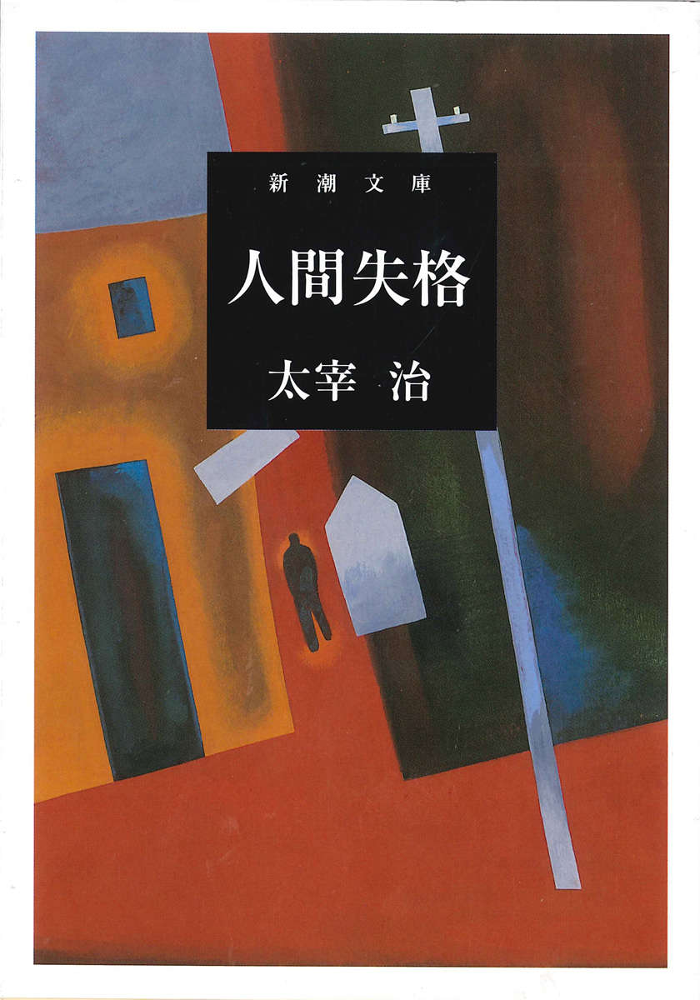
人間失格
太宰 治(だざい おさむ)
新潮社 2006/1/1
(232)
子ども時代から他者との関わりに深く迷い、青年時代も世の中や人間関係に恐怖し続ける葉蔵。その内面の弱さと容姿に女性はひき付けられ次々と同棲相手を替えていく。断ち切れない酒、薬。そして自殺未遂。徹底した自己破壊、人間に対する絶望。内面の真実を探究し、現代人の孤独を浮き彫りにした太宰治の最後の自伝的作品。
ringmoo
2010/02/19
最も太宰治らしい作品だろうと思います。それだけに、代表作とは知りながらも、なかなか手に取る事が出来なかった作品です。作品として素晴らしいとは思いますが、読むのが辛いのです。それは、自分の胸に深く突き刺さってくるものがあるからです。そして、それは今まで触れたくなかった部分を、的確に突いているからです。
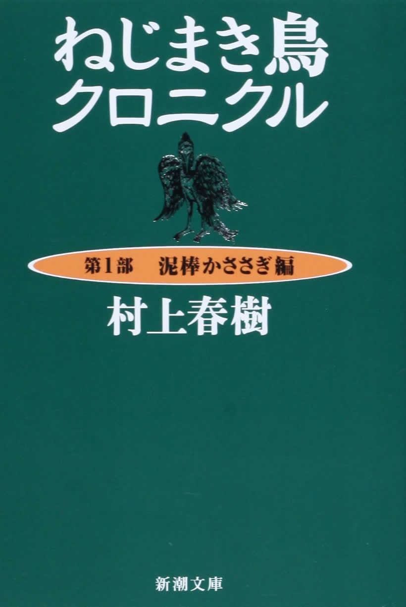
ねじまき鳥クロニクル〈第1部〉泥棒かささぎ編
村上 春樹(むらかみ はるき)
新潮社 1997/9/30
(110)
ねじまき鳥が世界のねじを巻くことをやめたとき、平和な郊外住宅地は、底知れぬ闇の奥へと静かに傾斜を始める。会社を辞めて家事を営む僕と、雑誌編集者として働くクミコの家から猫が失踪し、世界は闇にのみ込まれてゆく。駅前のクリーニング店から意識の井戸の底まで、ねじのありかを求めて探索の長い年代記は開始される。
Small_Faces
2010/06/06
「あの部屋」って「人間の精神の一番ややこしい部分」を描いてるのかな、と最近考えています。「井戸」の意味は相手を理解するためにはまず自分の「気難しい部分」と向き合い、見つめ、あらゆる要因によって生きることに行き詰まっている他者の「気難しい部分」に気付けってことだろうか。ややこしい物語だけれど、お薦め。
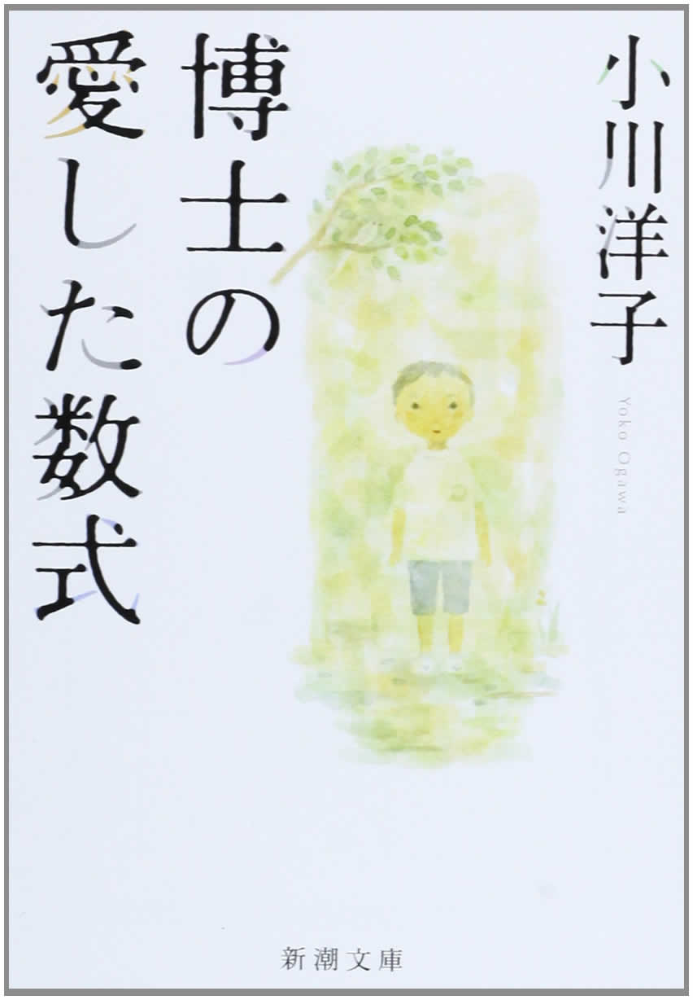
博士の愛した数式
小川 洋子(おがわ ようこ)
新潮社 2005/11/26
(565)
博士の背広の袖には、「ぼくの記憶は80分しかもたない」と書かれた古びたメモが留められていた。記憶力を失った天才数学者にとって、私は常に「新しい」家政婦で、数字が博士の言葉だった。やがて私の10歳の息子が加わり、ぎこちない日々は、驚きと歓びに満ちたものに変わった。あまりに悲しく暖かい、奇跡の愛の物語。
マナオ
2003/09/15
記憶が80分しか持たない博士と、そこに勤める家政婦とその息子。たった3人の関係や、博士の家という閉じられた空間であるはずの設定も、お互いの思いやりを描くことによって、数字のような無限に広がる可能性を持つものに描かれている。小川洋子の作品は、一見、無機質に見えるけれども、読後にはいつもぬくもりが残る。
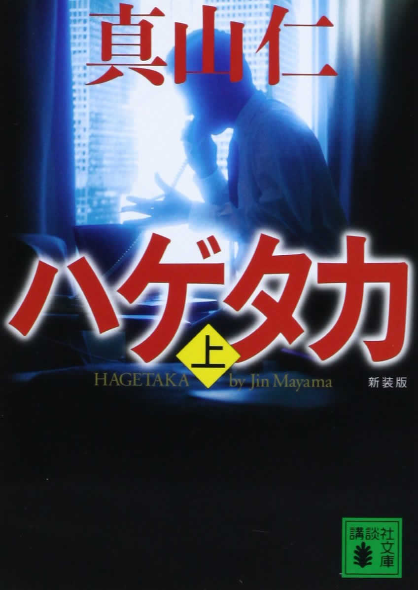
新装版 ハゲタカ(上)
真山 仁(まやま じん)
講談社 2013/9/13
(66)
不良債権を抱え、瀕死状態にある企業の株や債券を買い叩き、手中に収めた企業を再生し、莫大な利益を上げる、それがバルチャー(ハゲタカ)・ビジネスだ。ニューヨークの投資ファンド社長・鷲津政彦は、バブル崩壊後の不景気に苦しむ日本に舞い戻り、強烈な妨害や反発を受けながらも、次々と企業買収の成果を上げていった。
ｔａｋｏｚａｎｓ
2007/04/23
ＮＨＫのドラマを見て購入...そしてただただ驚いた。全然原作と違う。ドラマ版鷲津が引きずっている妙な暗さがなく、小気味よくストーリーが展開していく様は圧巻。経済小説らしく裏舞台を丁寧に描く様は経済ニュースの裏舞台を覗いているようで非常に面白い。ドラマから入ったファンも全くの別物として楽しめる一作である。
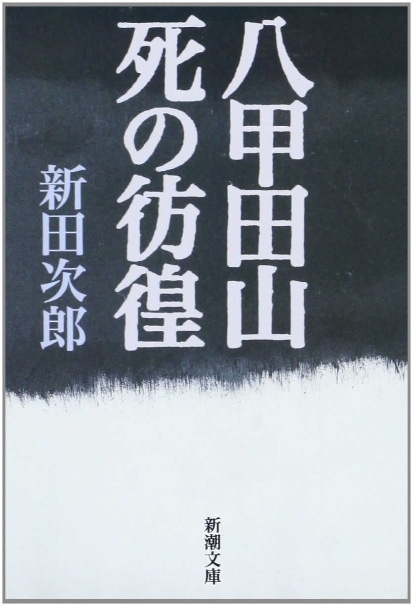
八甲田山死の彷徨
新田 次郎(にった じろう)
新潮社 1978/2/1
(47)
日露戦争前夜、厳寒の八甲田山で過酷な人体実験が強いられた。神田大尉率いる青森5聯隊は、雪中で進退を協議しているとき、指揮系統の混乱から199名の死者を出す。少数精鋭の徳島大尉率いる弘前31聯隊は、210余キロ、11日間の全行程を完全に踏破する。両隊を対比して自然と人間の闘いを迫真の筆で描く長編小説。
@poor work
2007/03/31
著者は極限状態での組織に注目している。２つの聯隊の明暗や死後も失われなかった序列である。階級の差はそのまま死傷率の差、または祭祀料の差という、冷徹なまでの数字になって表れていた。国家とは、組織とは、軍とは、戦争とは、人間とは、命とは何か。この八甲田山の死の彷徨を通じて、新田氏は読者に問いかけている。
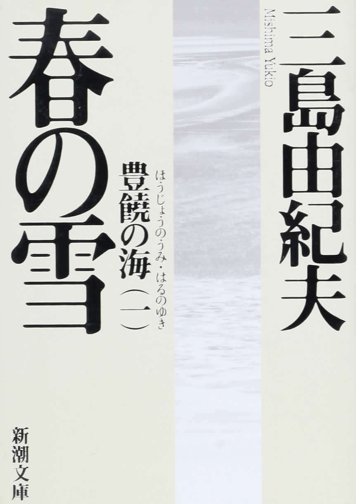
春の雪―豊饒の海・第一巻
三島 由紀夫(みしま ゆきお)
新潮社 2002/10/1
(82)
維新の功臣を祖父にもつ侯爵家の若き嫡子松枝清顕と、伯爵家の美貌の令嬢綾倉聡子の結ばれることのない恋。矜り高い青年が、「禁じられた恋」に生命を賭して、求めたものは何であったか？ 大正初期の貴族社会を舞台に、破滅へと運命づけられた悲劇的な愛。現世の営為を越えた混沌に誘われて展開する夢と転生の壮麗な物語。
Spring Birds
2004/11/11
人間の心は斯くも複雑で奥深いものかと思い知らされた。三島は文章表現の天才であり、心理分析の天才でもある。心理に鋭くメスを入れ、登場人物さえ意識しない感情を取り出して、それを言葉に置き換えて巧みに表現している、という感じがした。登場人物の心理描写が緻密で意外性を突き、泣くのも忘れてただ唸るのみだった。
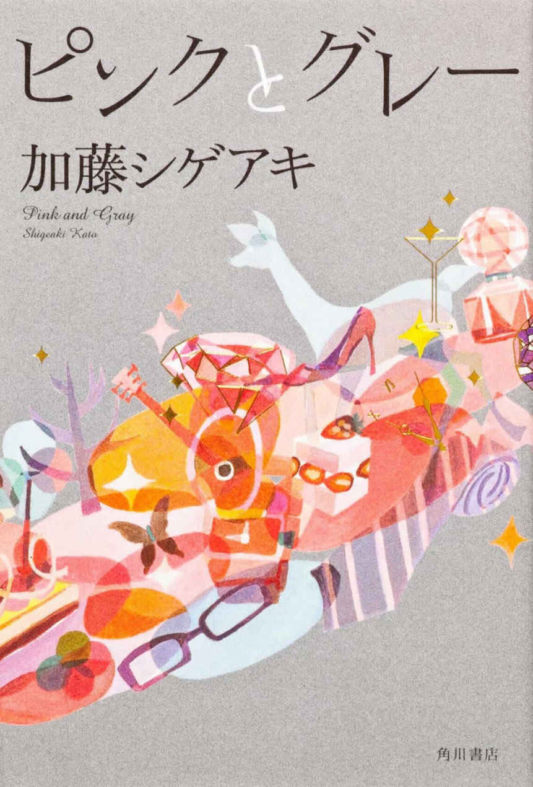
ピンクとグレー
加藤 シゲアキ(かとう しげあき)
角川書店(角川グループパブリッシング) 2012/1/28
(67)
ジャニーズ事務所の人気グループNEWSのメンバーである加藤シゲアキによる渾(こん)身の作家デビュー作品。ステージという世界の魔法、幻想に魅入られた幼なじみの二人の青年の愛と孤独を描く物語。芸能界を舞台に「成功と挫折」それぞれの道を歩んでいく親友同士の儚(はかな)く切ない人生模様。エンタメ・インサイドストーリーの誕生。
飴ーバ
2012/01/30
ゆるりと進む前半と加速する後半の展開の対比が読者を引き込んでいるなと感じました。若いアイドルの著書という視点で読むと、アイドルの枠を軽く超えたレベル。本書を読んで加藤シゲアキという人物に興味を持つ方も多いと思います。「どうせアイドルが書いた本でしょ」という印象をぶち壊すくらいのインパクトはあります。
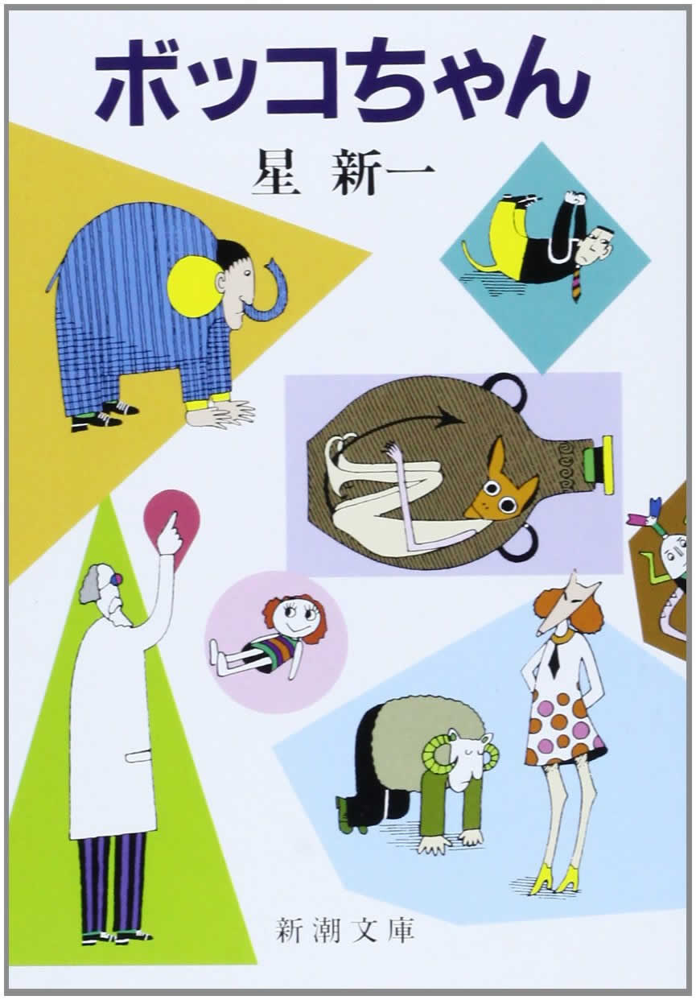
ボッコちゃん
星 新一(ほし しんいち)
新潮社 1971/5/27
(47)
スマートなユーモア、ユニークな着想、シャープな諷刺にあふれた光り輝く小宇宙群。日本SFのパイオニア星新一のショートショート集。表題作をはじめ、『おーい でてこーい』『殺し屋ですのよ』『月の光』『不眠症』『ねらわれた星』『冬の蝶』「鏡』『親善キッス』など、とても楽しくちょっぴりスリリングな自選50編。
kinzaza
2003/04/29
ありそうでない日常やまったくの空想世界など、舞台設定だけでも十分わくわくさせられた。固有名詞のほぼ出てこない点、極めて客観的に徹した記述、無機質な中に想像力を掻き立てるものがある。難しい小説を読むのも悪くは無いが、こういうシニカルな笑いを、抜群のポップセンスによって短く凝縮した本も侮ってはならない。
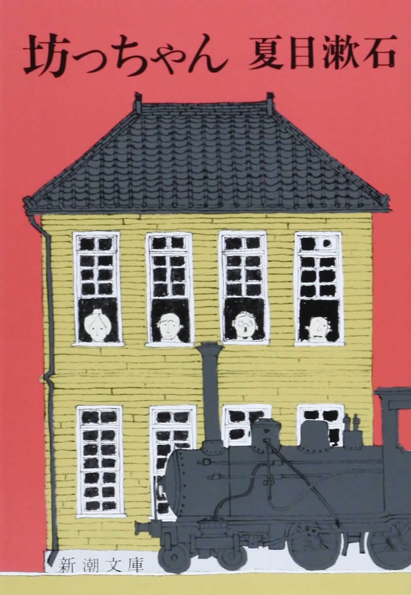
坊っちゃん
夏目 漱石(なつめ そうせき)
新潮社 2003/4/1
(114)
松山中学在任当時の体験を背景とした夏目漱石・初期の代表作。四国の中学に数学教師として赴任した、無鉄砲だけど正義感にあふれた坊っちゃんが、生徒や教員達との人間関係に真正面から挑んでいく。主人公の反俗精神に貫かれた奔放な行動は、滑稽と人情の巧みな交錯となって、漱石の作品の中でも特に人々愛されている名作。
読者
2006/08/22
よく痛快だと言われている（気がする）が、私は最後までどこか哀しかった。坊っちゃんははじめから最後まで、味方と呼べる人間はほとんどいない。坊っちゃんのエピソードは、それがまっすぐで痛快であればあるほど、同じくらいの強さで哀しくなる。面白いのに哀しい。ぽっかりと哀しいのに、十分すぎるほど面白い。お見事。
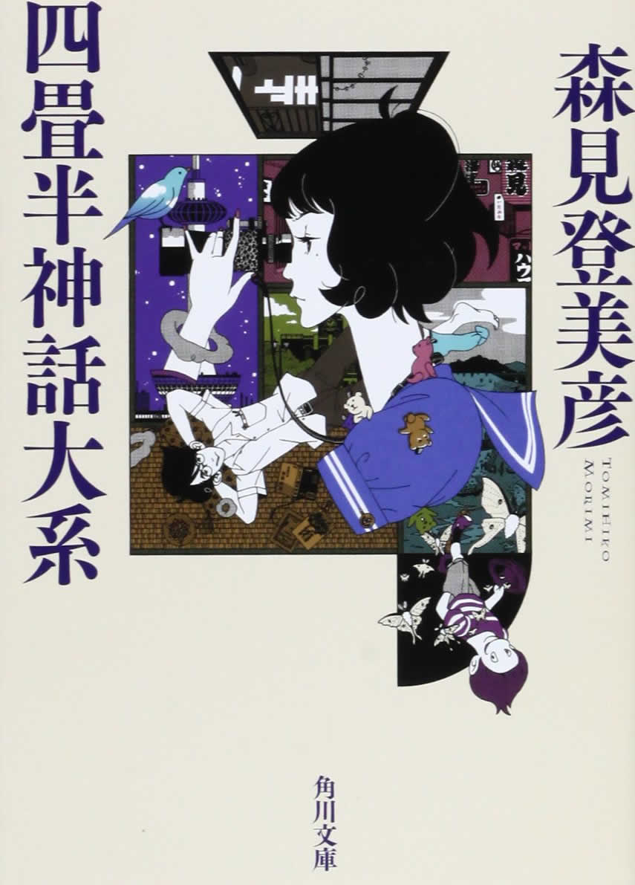
四畳半神話大系
森見 登美彦(もりみ とみひこ)
角川書店 2008/3/25
(97)
私は冴えない大学3回生。バラ色のキャンパスライフを想像していたのに現実はほど遠い。悪友の小津に振り回され、謎の自由人・樋口師匠に無理な要求をされ、孤高の乙女・明石さんとはお近づきになれない。できればピカピカの1回生に戻ってやり直したい。4つの並行世界で繰り広げられるおかしくもほろ苦い青春ストーリー。
junya.i
2008/12/03
2話目の繰り返される回りくどい表現に引き込まれ、3話目はもう止まらず、4話目は圧巻です。すごいのはここまでの興奮を味わいながら、なにか汚いものに触れてしまったような気分になること。登場人物は誰一人尊敬できず、起こる事件は心底くだらないのですが、(残念ながら)親近感にも通じるわけで感情移入を誘います。
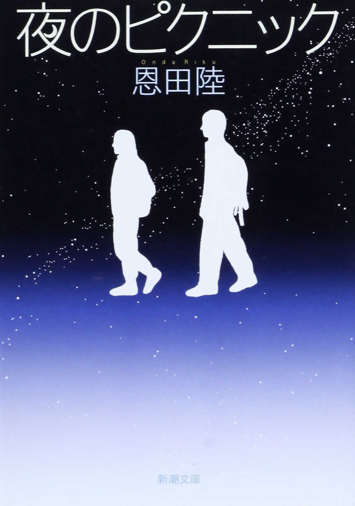
夜のピクニック
恩田 陸(おんだ りく)
新潮社 2006/9/7
(340)
高校生活最後を飾るイベント「歩行祭」は、全校生徒が夜を徹して80キロ歩き通す、北高の伝統行事。甲田貴子は密かな誓いを胸に抱き、歩行祭にのぞんだ。3年間、誰にも言えなかった秘密を清算するために。学校生活の思い出や卒業後の夢など語らいつつ、親友たちと歩きながらも、貴子だけは小さな賭けに胸を焦がしていた。
どりぃむ
2004/09/29
歩行祭という舞台設定が秀逸。青春小説の定石である学園などは登場せずひたすら歩く。極限状態だからこそ普段出来ない話をする。そこから登場人物の普段の生活や思いが鮮やかに浮かび上がります。「歩き続けるのは辛いけれども、歩行祭は終って欲しくない」という登場人物とページをめくる私たちの気持ちは共有出来るはず。
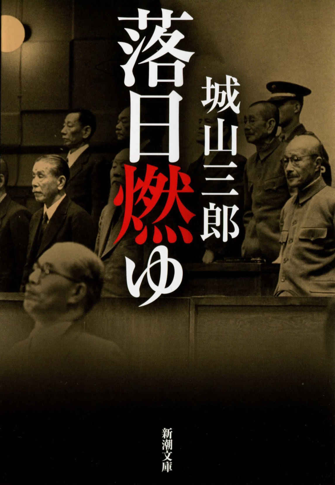
落日燃ゆ
城山 三郎(しろやま さぶろう)
新潮社 1986/11/27
(63)
東京裁判で絞首刑を宣告された七人のA級戦犯のうち、ただ一人の文官であった元総理、外相広田弘毅。戦争防止に努めながらその努力に水をさし続けた軍人と共に処刑されるという運命に直面し、裁判を通じて一切の弁解をせず従容として死を受け入れた不世出の政治家の生涯を、昭和史と重ねながら抑制した筆致で克明にたどる。
鳩三郎
2007/01/06
東京裁判は教科書で学んだ程度の知識しかなく、この本を読んで広田弘毅はもちろん、戦争が引き起こしたすべての事象、巻き込まれた人間、戦争を正当化して推し進めた者たちのさまざまな思いを一気に感じさせられた気がする。広田の表の顔といえる政治家としての手腕や実績も去ることながら、家庭人としての姿に心打たれた。
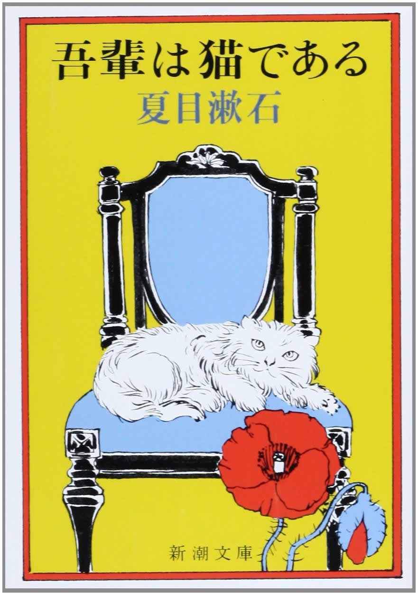
吾輩は猫である
夏目 漱石(なつめ そうせき)
新潮社 2003/6/1
(68)
苦沙弥先生の書斎に集まる明治の俗物紳士たちの語る珍談・奇譚、小事件の数々を先生宅で飼われている猫の眼から風刺的に描いた漱石最初の長編小説。江戸落語の笑いの文体と英国の男性社交界の皮肉な雰囲気、漱石の英文学の教養とが渾然一体となり、作者の饒(じょう)舌な才能が遺憾なく発揮された、痛烈・愉快な文明批評の古典的快作。
闇太郎
2006/04/02
猫好きにはたまらない本。面白おかしく、かわいい猫のしぐさと行動、猫の視点から見た人間の姿。登場人物も非常に個性的で、何度も笑わせられました。この作品は長くて、色々なことが詰め込まれていて読みにくい部分も多かったのですが、それを補って余りある面白さだと思います。個人的には漱石の作品の中で一番好きです。
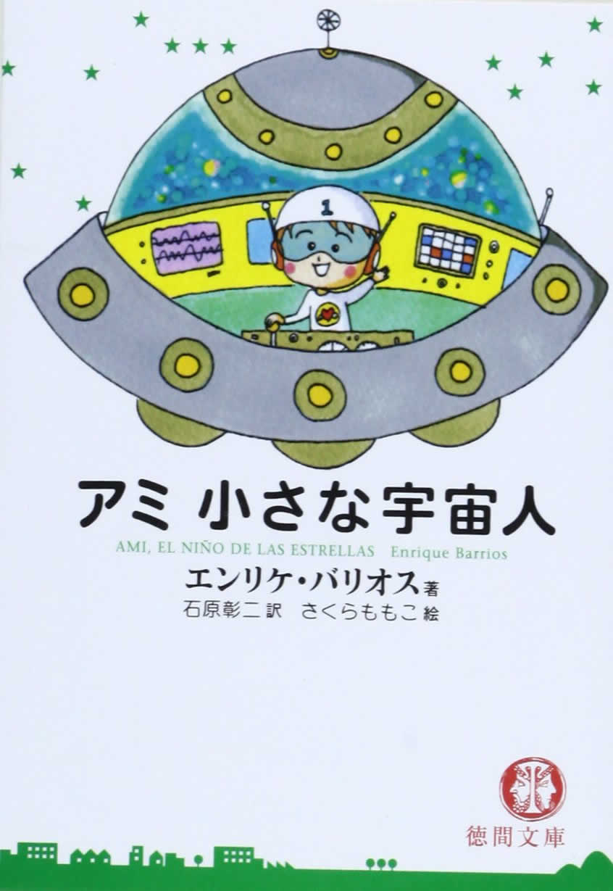
アミ 小さな宇宙人
Ami, el niño de las estrellas
エンリケ・バリオス(Enrique Barrios)
徳間書店 2005/8/1
(157)
少年ペドゥリートと宇宙人アミとの感動のコンタクト体験。宇宙の彼方、地球を脱出した人々の棲む星では、科学が高い精神性に支えられ、スーパーコンピュータによって、人を傷つけないシステムが見事に機能していた。宇宙をめぐる旅の中で、ペドゥリートは地球がいまだ野蛮な愛の度数の低い、未開の惑星であることを教わる。
マイくろ
2010/11/16
この本は一言で「愛がたくさん込められていてる本」です。そして僕たちが「地球に生まれた意味」や「生きている意味」をも優しく教えてくれます。僕は納得しました。腑に落ちました。本当に、愛で満たされました。たくさんの人に読んでほしい、僕が「世界で一番お勧めする本」です。読むのではなくて、感じてみてください。
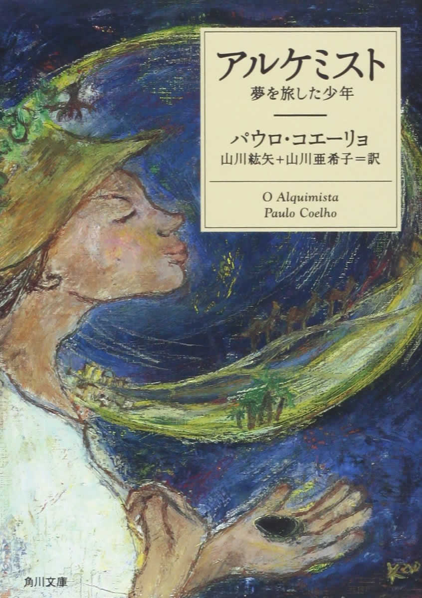
アルケミスト―夢を旅した少年
The Alchemist
パウロ コエーリョ(Paulo Coelho)
角川書店 1997/2/1
(237)
羊使いのサンチャゴは彼を待つ宝が隠されているという夢を信じ、アフリカの砂漠を越えピラミッドを目指す。「何かを強く望めば宇宙のすべてが協力して実現するように助けてくれる」。少年は錬金術師の導きと旅での出会いと別れのなかで、人生の知恵を学んでいく。欧米をはじめ世界中でベストセラーとなった夢と勇気の物語。
katz
2008/02/03
自分を信じる事、大切にする事、神様（または何か大きな力）を信じてゆだねる事、感じる事、大きな愛。そういった事の大切さを思い出します｡人生のヒントになる言葉がちりばめられていて力づけられました。読んでいる間、心が平安で人生に確信を持てて楽しく読めました｡つらい事も楽しい事も受け入れて歩みたいものです。
アルジャーノンに花束を
Flowers for Algernon
ダニエル キイス(Daniel Keyes)
早川書房 1999/10/1
(190)
精神薄弱の陽気なパン屋の店員チャーリイ・ゴードンが、人工的に知能を高める人体実験の被験者になり、やがて彼の知能は、超天才の域に達していく。同じ実験を受けた白ネズミのアルジャーノンを競争相手に、連日検査を受けることになる。超知能を手に入れた青年の、愛と憎しみ、喜びと孤独を通して、人間の心の真実に迫る。
こてんこ
2012/02/24
10代では「能力があっても思いやりや優しさがなければ意味がない」と思ったが、20代で読み返したとき「人のおめぐみで生きていたくない」というところで「思いやりや優しさがあっても、能力がなければ愛する人のお荷物になってしまうのか」と気持ちが重たくなった。自分がそうなったとき、どうしたらいいかわからない。
異邦人
The Stranger
カミュ(Albert Camus)
新潮社 1963/7/2
(102)
母の死の翌日海水浴に行き女と関係を結び、映画をみて笑いころげ、友人の女出入りに関係して人を殺害し、動機は「太陽のせい」と答える。判決は死刑だが、幸福であると確信し、処刑日に見物人が憎悪の叫びで迎えることだけを望む。論理的な一貫性のない主人公のムルソーに、理性や人間性の不合理を追求したカミュの代表作。
ポリ銀
2010/11/20
初めて読んだのは19歳の時で、19年経って再び読みましたが、読後の感動が衰える事はありません。前回は、ムルソーが司祭を捕まえ絶叫した、最後のセリフに、うちふるえるような興奮を覚えましたが、今回はムルソーの素直な生きざまに共感を覚えました。短い小説ですが、人生に深い感銘を与えてくれる作品だと思います。
カラマーゾフの兄弟〈上〉
The Brothers Karamazov
ドストエフスキー(Фёдор Миха
йлович Достое
вский)
新潮社 1978/7/20
(100)
物欲の権化のような父フョードル・カラマーゾフの血を相異なりながらも色濃く引いた三人兄弟。放蕩無頼な情熱漢ドミートリイ、冷徹な知性人イワン、敬虔(けん)な修道者で主人公アリョーシャ。そして父の私生児と噂されるスメルジャコフ。これらの人物の交錯による愛憎の地獄図絵の中に、神と人間という根本問題を据え置いた名作。
Jellyfish
2012/10/31
海外小説は内容の良し悪しよりも翻訳の文体で購入を決めることがしばしばあります。本作の文は適度な難易度、所々で一文が長すぎる印象を抱くかもしれませんが、頑張れば読破できるレベルです。注訳が多いのには助かりました。人名の注訳はもちろん、慣用句、引用の注訳までついているので初めて読む方に特におすすめです。
グレート・ギャツビー
The Great Gatsby
スコット フィッツジェラルド(Francis Scott Key Fitzgerald)
中央公論新社 2006/11/1
(114)
村上春樹が人生で巡り会った最も大切な小説を、あなたに。新しい翻訳で鮮やかに甦(よみがえ)る、哀しくも美しいひと夏の物語。読書家として夢中になり、小説家として目標のひとつとしてきた、20世紀文学に大きな影響を与えたフィッツジェラルドの傑作『グレート・ギャツビー』に、翻訳家として挑む。構想20年、満を持しての訳業。
ありす
2007/03/21
原文でかなり衝撃を受けた私ですが、この訳はさらなる衝撃でした。訳が見事なのはもちろん、ギャツビー関連のエッセイを読んだ上で、解釈の深さに驚きました。言語が違うと醸し出す雰囲気も変わりますが、まさしく僕のイメージのギャツビー、いや、アメリカで学ぶフィッツジェラルドの描こうとしたギャツビーそのものです。
シッダールタ
Siddhartha
ヘッセ(Hermann Hesse)
新潮社 1959/5/4
(48)
シッダールタとは釈尊の出家以前の名である。生に苦しみ出離を求めたシッダールタは、苦行を重ねたあげく、川の流れから時間を超越することでのみ幸福が得られることを学び、ついに一切をあるがままに愛する悟りの境地に達する。成道後の仏陀を讃美するのではなく、悟りに至るまでの求道者の体験の奥義を探ろうとした作品。
ニラン
2003/02/27
人間の課題である｢自己実現｣をテーマにした作品である。ヘッセ自身、自己実現を人生で重要視し、それをテーマにした本を幾つも発表している。この本では主人公が自己実現欲求を起こし、その欲求を満たすものを迷いながら人の力も借りてなんとか見つける。自己実現について書かれたヘッセ作品中で最高のものと勝手に思う。
一九八四年[新訳版]
1984
ジョージ・オーウェル(George Orwell)
早川書房 2009/7/18
(74)
ビッグ・ブラザー率いる党が支配する全体主義的近未来。ウィンストン・スミスは真理省記録局に勤務する党員で歴史の改竄(ざん)が仕事だった。彼は完璧な屈従を強いる体制に以前より不満を抱いていた。奔放な美女ジュリアと恋に落ちたことを契機に、彼は伝説的な裏切り者が組織したと噂される反政府地下活動にひかれるようになる。
unagi-inu
2010/12/14
SFといっても奇想天外な科学技術はほとんど出ずにむしろ退廃的で、実際に書かれた1948年（アナグラム）から夢想しても尚、文明進化が見られません。しかし物語を読み進めるにつれその理由が判明していく。政治学には疎いですが、60年以上も前に社会の真理深層を鋭くえぐり巧みに表現した本作、必読の価値ありです。
存在の耐えられない軽さ
The Unbearable Lightness of Being
ミラン・クンデラ(Milan Kundera)
集英社 1998/11/20
(51)
チェコ出身の作家、ミラン・クンデラが、パリ亡命時代に発表、全世界を興奮の渦に巻き込んだ衝撃の恋愛小説。「プラハの春」と、その凋(ちょう)落の時代を背景に、ドン・ファンの外科医トマーシュと田舎娘テレザ、奔放な女性画家サビナの3人が辿る愛の悲劇。たった一回限りの人生の、限りない軽さは、本当に耐えがたいのだろうか？
gizaemon
2012/09/14
集英社文庫版と河出書房新社文学全集版の翻訳の違いについて。私は先に集英社版を読み、後に刊行された河出版を再読しました。どちらも日本語として普通に読める訳です。まずはこの傑作をどちらの訳でもいいので味わってほしいです。集英社版で読んだ方も、この作品が気に入ったのなら、河出訳に手を出すとよいと思います。
罪と罰〈上〉
Crime and Punishment
ドストエフスキー(Фёдор Миха́йлович Достое́вский)
岩波書店 1999/11/16
(57)
その年、ペテルブルグの夏は長く暑かった。大学を除籍になり、ぎりぎりの貧乏暮らしのラスコーリニコフに、郷里の母と妹の期待と犠牲が重くのしかかる。この悲惨な境遇から脱出しようと、彼はある「計画」を決行する。閉塞した社会状況のなかでくすぶる人間性回復への強烈な願望を描き、世界文学に新しいページをひらいた。
けい
2005/05/30
著者の中で一番好きな作品で、本作から入って他も読むようになりました。人物の思想が絡んだ心情は実に緻密で、よくもここまで表現できるものだと思いました。主人公に限らず一人一人の人間が濃いです。一生の間に読んでおかなければならない本だと思います。できれば若いうちに。何度読んでも、その都度違った味がします。
動物農場
Animal Farm
ジョージ・オーウェル(George Orwell)
角川書店 1995/5/1
(32)
一従軍記者として、スペイン戦線に自ら身を投じた体験を持つジョージ・オーウェルが、バルセロナに帰還して見たものは、スターリン独裁下の欺瞞(ぎまん)に満ちあふれた社会主義の実態であった。スターリン主義とソビエト神話への怒りをこめて、批判と風刺を利かせ、主人公のブタが人間の農場主を追い出すという寓話的に描いた物語。
トリイミキ
2008/02/12
酷使されていた動物が農場の管理を始め、その中から人間と同じ役割を果たす動物が現われ、また酷使され、いつのまにか昔と同じ......これがソビエト共産主義への批判だと理解できる人は、少ないのではないか。それほど時が流れている。しかしこの物語は不滅だ。集団が個人を圧殺してゆく様が率直にわかりやすく描かれている。
人間の土地
Terre des hommes
サン=テグジュペリ(Saint-Exupéry)
新潮社 1955/4/12
(40)
「ぼくらのほうから駆けつけてやる！ ぼくらこそは救援隊だ！」。サハラ砂漠の真っ只中に不時着遭難し、渇きと疲労に打克ち、三日後、奇蹟的な生還を遂げたサン=テグジュペリの勇気の源泉とは。職業飛行家としての劇的な体験をふまえ、人間本然の姿を星々や地球の間に探し、現代人に生活と行動の指針を与える世紀の名著。
みほるり
2001/12/13
無人島に1冊だけ本を持っていけるといわれたら、迷わずこの本を選びます。文体が古めかしく読みにくい部分もあるけれど、何度も読むうちに、堀口大學氏の日本語の美しさの虜になってしまいます。人間らしい生き方をテーマした文章には感銘をうけ、暗唱できる部分もあって、単に飛行士としての体験談では終わっていません。
ハリー・ポッターと謎のプリンス ハリー・ポッターシリーズ第六巻
Harry Potter and the Half-blood Prince
J. K. ローリング(J K Rowling)
静山社 2006/5/1
(166)
ヴォルデモートの復活のせいで夏だというのに国中に冷たい霧が立ち込めているとき、ダーズリーの家にダンブルドアがやって来るという。そしてダンブルドアの右手に異変が。17年前の予言はハリーとヴォルデモートの対決を避けられないものにした。過酷な運命に立ち向かう16歳のハリーにダンブルドアの個人教授が始まる。
にゃんこ
2006/08/25
学校生活から事件に挑むという流れもマンネリかと思いながら読みましたが、ハリーとダンブルドアのからみが多く、最終巻に向けて色々なことが明らかになっていき、マンネリ感などいつのまにか吹っ飛んでいました。ヴォルデモートの過去のシーンでは、いかに彼が幼い頃から恐ろしい存在であったのかが生々しく感じられます。
日の名残り
The Remains of the Day
カズオ・イシグロ(Kazuo Ishiguro)
早川書房 2001/5/1
(73)
品格ある執事の道を追求し続けてきたスティーブンスは、短い旅に出た。美しい田園風景の道すがら、さまざまな思い出がよぎる。長年仕えたダーリントン卿への敬慕、執事の鑑(かがみ)だった亡父、女中頭への淡い想い、二つの大戦の間に邸内で催された、重要な外交会議の数々。過ぎ去りし思い出は、輝きを増して、胸のなかで生き続ける。
reopen
2007/04/06
テンポ感のある大衆的な小説を読み慣れていると、最初は単調な展開に戸惑いを感じた。英国貴族に仕える執事の物語なんて現実味に乏しく想像力が及ばなかったけれど、ページを追うごとに胸にじんわり主人公の切なさが染み込んでくる。是非あとがきも読んで欲しい。あとがきにもあるように、上質の感動を得られる作品だった。
百年の孤独
One Hundred Years of Solitude
ガブリエル ガルシア=マルケス(Gabriel José García Márquez)
新潮社 2006/12/1
(43)
愛の欠如のなかに生きる孤独な人間の生と死、相つぐ奇想天外な事件、奇態な人々の神話的物語世界。マコンド村の草創、隆盛、衰退、ついには廃墟と化すまでの百年、はじめて愛によって生を授かった者が出現したとき、メルキアデスの羊皮紙の謎が解読され、村の開拓者一族ブエンディア家の葛藤を呑み尽しながら歴史が終わる。
南コータロー
2008/10/11
チョコレートを飲んで空中浮遊する神父、四年以上も降り続いている雨、異常に繁殖する家畜など、非現実的なエピソードと超人的な登場人物たちによって綴られる、不思議な神話のような物語に、自然と引き込まれる。百年の物語に誰もが圧倒されるのは、そこに人間の歴史の全てが凝縮されていると感じるからではないだろうか？
変身
The Metamorphosis
フランツ・カフカ(Franz Kafka)
新潮社 1952/7/30
(112)
ある朝、気がかりな夢からさめると、自分が一匹の巨大な虫に変わっているのを発見する男グレーゴル・ザムザ。なぜ、こんな異常な事態になったのか。謎は究明されぬまま、ふだんと変わらないありふれた日常がすぎていく。事実のみを冷静に伝える、まるでレポートのような文体が読者に与えた衝撃は様々な解釈を呼び起こした。
ビイハヴ
2007/01/30
カフカは出版される際「表紙に毒虫の絵は描かないでくれ」と注文したという。毒虫はあくまで「疎外される者」の象徴である。いつの時代、どの場所にも毒虫はいる。社会的に疎外される者と、彼らを身内に抱える家族。この話に説明はなくオチもない。だからこそ、その丸投げっぷりと残酷さは、ひどく現実的に思えてならない。
星の王子さま―オリジナル版
The Little Prince
サン=テグジュペリ(Saint-Exupéry)
岩波書店 2000/3/10
(117)
操縦士の「ぼく」は、サハラ砂漠に不時着する。1週間分の水しかなく、孤独で不安な夜を過ごした「ぼく」は、翌日、1人の少年と出会う。話すうちに、少年がある小惑星からやってきた王子であることを「ぼく」は知る。「ぼく」と「ほんとうのこと」しか知りたがらない純粋な星の王子さまとのふれあいを描いた永遠の名作。
桃乃由希
2005/07/26
この本には生きていくなかで変わらない哲学が記されていからこそ、約60年経っても世界中で親しんで読み続けられ、挿絵を考慮してオリジナル版が出された。とてもすごい本だと言える。これからもイロイロな人の手に渡ってゆく。誰かの心の中で大切にされてゆく。私だってこの本と、自分の死が近づく頃まで向き合い続ける。
夜と霧
Man's Search for Meaning
ヴィクトール・E・フランクル(Viktor Emil Frankl)
みすず書房 2002/11/6
(176)
ユダヤ人精神分析学者のナチス強制収容所体験をつづった本書は、日本でも1956年の初版以来、古典として読みつがれている。悪名高いアウシュビッツとその支所に収容されて苛酷な環境を生き抜き解放される。家族は収容所で命を落とし、1人残されての生還だった。人間とは何かを描いた静かな書を、新訳・新編集でおくる。
mitsumata
2004/06/10
旧版とは違う訳者による新訳。私たちはなぜ生きるのか。その答えが今ほど切実に求められている時代はないだろう。単なる収容所生活のレポートではない。それは、圧倒的な絶望の中で生きた人々のたどりついた、最後のこころのとりでの記録である。人間の究極の「こころの世界」をえがくこの本を、すべての人にすすめたい。
老人と海
The Old Man and the Sea
ヘミングウェイ(Ernest Miller Hemingway)
新潮社 2003/5/1
(75)
キューバの老漁夫サンチャゴは、不漁にもめげず小舟に乗り一人で出漁する。わずかな餌に想像を絶する巨大なカジキマグロがかかり、4日にわたる死闘ののち老人は勝つが、サメに襲われくくりつけた獲物は食いちぎられてゆく。徹底した外面描写を用い、大魚を相手に闘う老人の姿を通して自然の厳粛さと人間の勇気を謳う名作。
beatris
2006/10/22
本書121ページの言葉「魚をとるってことは、おれを生かしてくれることだが、同時におれを殺しもするんだ」は圧巻。勝った後、何かを成し遂げた後に訪れるものは無だ。徐々に醜く容赦なく削り取られる自分。高い山に登ったら同じだけ低い場所へ降りなければならないのか。これほど強く訴えかけてくる文章を他に知らない。
わたしを離さないで
Never Let Me Go
カズオ・イシグロ(Kazuo Ishiguro)
早川書房 2008/8/22
(222)
優秀な介護人キャシー・Hは提供者と呼ばれる人々の世話をしている。生まれ育った施設ヘールシャムの仲間たちも提供者だ。キャシーは施設での奇妙な日々に思いをめぐらす。図画工作に極端に力を入れた授業、毎週の健康診断、保護官と呼ばれる教師たちの不思議な態度。彼女の回想はヘールシャムの残酷な真実を明かしていく。
Yaginuma
2007/07/22
運命を強制された人々の静かで途絶えることのない感情の動き、それらをイシグロならではの抑制された文体で静謐に描き出したという印象を受けました。３人の主人公の心の内では、あらゆる感情が揺れ動きます。静かな水面に３滴の雫が発生させた同心円の波が広がり、交錯して増幅しすれ違い、去っていく様子が想起されます。

銀河ヒッチハイク・ガイド
The Hitchhiker's Guide to the Galaxy
ダグラス・アダムス(Douglas Adams)
河出書房新社 2005/9/3
(29)
銀河バイパス建設のため、ある日突然、地球が消滅した。どこをとっても平凡な英国人アーサー・デントは最後の生き残りとなってしまう。アーサーはたまたま地球に居た宇宙人フォードと、宇宙でヒッチハイクをするハメになる。必要なのはタオルと「ガイド」。シュールでブラック、そして途方もなくばかばかしいSFコメディ。
toriko
2005/09/16
独特の脱力感が面白い。なにせ登場人物全員がヘン、というかある意味不真面目。頭がいいんだか悪いんだか、危機的状況にあっても決して焦らない。特筆すべきは訳文のうまさ。原文でしか分からない面白さもあると思うが、読みながら途中で何回も吹き出してしまった。よくここまで無理のない日本語に翻訳できたものだと思う。
クリムゾンの迷宮
貴志 祐介(きし ゆうすけ)
角川書店(角川グループパブリッシング) 1999/4/9
(172)
藤木はこの世のものとは思えない、異様な光景のなかで目覚めた。視界一面を覆う深紅色の奇岩の連なり。傍らの携帯用ゲーム機からは「火星の迷宮へようこそ。ゲームは開始された」というメッセージが映し出される。生き抜くためにどのアイテムを選ぶのか。自らの選択が明日の運命を決める。死を賭した戦慄のゼロサムゲーム。
ブラックベルト
2007/05/27
見知らぬ土地（火星？）で始まった、生き残りをかけたサバイバルゲーム。ありがちな設定かと思いきや、圧倒的な描写力でストーリーに引き込まれ「次はいったいどんな展開が...」と手に汗を握りながらページをめくり続けた。結末は賛否両論あると思うが、私自身は十分満足できた。グールの描き方や、恐怖の煽り方は天下一品。
ジェネラル・ルージュの凱旋(上)
海堂 尊(かいどう たける)
宝島社 2009/1/8
(50)
伝説の歌姫が、東城大学医学部付属病院に緊急入院した頃、不定愁訴外来担当の田口公平の元には、「将軍(ジェネラル)」の異名をとる、救命救急センター部長の速水晃一が、特定業者と癒着しているという内容の匿名の告発文書が届いていた。高階病院長から依頼を受けた田口は、調査に乗り出す。田口・白鳥シリーズの第３弾。
シロフォン
2009/01/18
まず、本シリーズを刊行順に読まれることをお勧めします。特に前作は本作と時間軸・人物を共有する作品です。著者の現在の医療に対する問題提起という一貫したテーマをエンタメ小説に仕立て上げる腕前が、本作では一層際立ちます。物語を楽しみつつ、医療の理想・使命と現実についての思いをはせずにはいられなくなる一冊。
13階段
高野 和明(たかの かずあき)
講談社 2004/8/10
(120)
犯行時刻の記憶を失った死刑囚。その冤(えん)罪を晴らすべく、定年間近の刑務官・南郷は、不幸な事故で殺人を犯した青年・三上と共に無実の罪に苦しむ男を救うために立ち上がった。だが手掛かりは、死刑囚の脳裏に甦(よみがえ)った「階段」の記憶のみ。処刑までに残された時間はわずかしかない。二人は無実の男の命を救うことができるのか。
steelydan
2005/02/20
文句無く面白い。納得のベストセラーです。当たり前ですが人を殺すということの重さを改めて考えさせられますし、人が人を裁くことの矛盾、システム化することの問題等、諸々の重いテーマを提示しています。それでいて判り易く、迫真のリアリティーをもって最後まで興味をそらさず読ませる術は、とても新人とは思えません。
精霊の守り人
上橋 菜穂子(うえはし なほこ)
新潮社 2007/3/28
(106)
老練な女用心棒バルサは新ヨゴ皇国の二ノ妃から皇子チャグムを託される。100年に一度卵を生む精霊の卵を宿した息子を疎ましく思う父帝が差し向ける刺客や、異界の魔物から幼いチャグムを守るため、バルサは身体を張って戦い続ける。建国神話の秘密、先住民の伝承など記述の細かさ、確かさは文化人類学者の著者ならでは。
aquatio
2007/08/23
50過ぎたおぢちゃんが、という言葉は振り切り買ってみた。いやぁ、おもしろい。ありえなぁいと叫ぶだけの浅いファンタジーではなく、とても重厚でしっかり細部も練り込まれた、実に味わい深い作品です。老練な女用心棒と言うのがそもそも面白いが、脇役たちが人間味あるドラマチックな人達ばかりで物語に色を添えている。
戦闘妖精・雪風(改)
神林 長平(かんばやし ちょうへい)
早川書房 2002/4/1
(35)
南極大陸に突如出現した超空間通路によって、地球への侵攻を開始した、未知の異星体「ジャム」。戦術戦闘電子偵察機・雪風とともに、孤独な戦いを続ける特殊戦のパイロット・深井零。その任務は、味方を犠牲にしてでも敵の情報を持ち帰るという、非情かつ冷徹なものだった。発表から20年後に緻密な加筆訂正をした改訂版。
カスタマー
2001/06/13
正体不明・コミュニケート不能の敵ジャムと地球社会と断絶した防衛軍FAFの戦争で人間は思う。ジャムは「人間の敵であってほしい」。戦争遂行の技術で戦争に追いこまれ、そこでむしろ自らの戦争を望む人間。SFであるにもかかわらず、否、SFであるからこそ本書は現実のテクノロジーと人間の問題を鋭く描き出している。
空の中
有川 浩(ありかわ ひろ)
角川グループパブリッシング 2008/6/25
(94)
200X年、謎の航空機事故が相次ぎ、メーカーの担当者と生き残った自衛隊パイロットは調査で高空へ飛んだ。高度2万、事故に共通するその空域で彼らが見つけた秘密とは? 地上では子どもたちが海辺で不思議な生物を拾う。大人と子どもが見つけた2つの秘密が出会うとき、日本に、人類に降りかかる前代未聞の奇妙な危機とは。
リオ
2008/07/05
UMA（未確認生物）とのファーストコンタクトを扱ったSFですが、人間の美しさを描いた本でもあります。人間が自らの愚かさも弱さも受容し、自然に対して謙虚に優しく生きる姿の美しさに感動し、涙無しでは読めません。文庫化で「仁淀の神様」という掌編が加えられ、本作の後日談として最終章が1つ追加された感じです。
第三の時効
横山 秀夫(よこやま ひでお)
集英社 2006/3/17
(125)
殺人事件の時効成立目前。現場の刑事にも知らされず巧妙に仕組まれた第三の時効とはいったい何か。F県警捜査第一課。一班の朽木、二班の楠見、三班の村瀬。一筋縄ではいかない強行犯の刑事たちが覇権を激しく競い合い、難事件に挑む。刑事たちの生々しい葛藤と、逮捕への執念を鋭くえぐる表題作ほか、全六篇の連作短篇集。
shiono
2003/03/24
謎解きのプロセスや意外な結末という構成要素はどれも高いレベルで、本格推理小説の醍醐味を堪能できる。個性的な刑事を競合させるキャラクター演出の妙、短編ならではのスピーディーさと無駄のない展開はスリリングでどれも読み応えがある。ノワールでもサイコサスペンスでもない、オーソドックスで上質の警察ミステリだ。
天使と悪魔 (上)
Angels & Demons
ダン・ブラウン(Dan Brown)
角川書店 2006/6/8
(81)
ハーヴァード大の図像学者ラングドンはスイスの科学研究所長から連絡を受け、ある紋章についての説明を求められる。それは17世紀にガリレオが創設した失われた秘密結社の伝説の紋章で、殺された男の胸に焼印として押され、その男は反物質の生成に成功した科学者だった。反物質は殺人者に盗まれヴァチカンに持ち込まれる。
たまには息抜きも。。。
2006/12/14
『ダ・ヴィンチコード』があまりにもメジャーになりすぎたので埋もれがちだが、本作こそ、『ダ・ヴィンチコード』の主人公・ラングドンが活躍する第１作。すべてはココから始まっています。ページを開くとついつい先へ先へ、気がついたら数時間たっていた......などということが起こってしまうかも！ 非常に面白い物語です。
夏への扉
The Door into Summer
ロバート・A. ハインライン(Robert Anson Heinlein)
早川書房 2010/1/30
(55)
飼い猫のピートは冬になると夏への扉を探す。家のドアのひとつが夏に通じていると信じているのだ。1970年12月3日、ぼくも夏への扉を探していた。恋人に裏切られ、生命から二番目に大切な発明までだましとられたぼくの心は、12月の空同様に凍てついていた。そんな時「冷凍睡眠保険」のネオンサインにひきよせられる。
武士
2011/10/25
本作を読み出してから、山下達郎の曲「夏への扉」といくつもの単語がリンクするのに気づいた。終盤の幸せに向かって突き進む展開に合わせて、テープをエンドレスで流しまくりましたが、生涯、あんなに幸せな読書体験はないと思う。その小説をイメージした楽曲をＢＧＭに読了する、二度とないであろう心地よい読後感でした。
白夜行
東野 圭吾(ひがしの けいご)
集英社 2002/5/17
(435)
19年前の大阪の質屋殺し事件は、迷宮入りする。被害者の息子・桐原亮司と、「容疑者」の娘・西本雪穂は、その後、別々の道を歩んで行く。二人の周囲に見え隠れする、幾つもの恐るべき犯罪。だが、何も「証拠」はない。そして19年。息詰まる精緻な構成と、叙事詩的スケール。心を失った人間の悲劇を描くミステリー長篇。
よしくん
2007/11/05
主人公2人の小学生から19年後までを内面の心理描写が全くないまま淡々と語られる。真に驚くべきことは最後まで2人の内面が一切明かされないこと。2人に潜む闇はあまりに深く、ありきたりの想像や感情では推し量れるものではなかろう。だから読後もふとした拍子に2人の物語に思いを馳せてしまう。余韻が消えないのだ。
星を継ぐもの
Inherit the Stars
ジェイムズ・P・ホーガン(James Patrick Hogan)
東京創元社 1980/5/23
(148)
月面調査員が真紅の宇宙服をまとった死体を発見した。綿密な調査の結果、この死体は、なんと死後五万年を経過していることがわかった。果たして現生人類とのつながりはいかなるものなのか。やがて木星の衛星ガニメデで、地球のものではない宇宙船の残骸が発見される。一世を風靡したジェイムズ・P・ホーガンのデビュー作。
yukkie_cerveza
2003/03/16
人類の起源についての想像を絶する仮定に、本格ミステリの要素をふんだんに盛り込んで編み上げたハードSF巨編です。ふだんはSF小説を読まないのですが、そんな私にこの作品は人間というのは果てしない想像力を備えた偉大な生き物なのだということを感じさせ、脳髄がしびれるような心地よい読書体験を与えてくれました。
ミレニアム１ ドラゴン・タトゥーの女 （上）
The Girl with the Dragon Tattoo
スティーグ・ラーソン(Stieg Larsson)
早川書房 2011/9/8
(88)
月刊誌ミレニアムの発行責任者ミカエルは、大物実業家の違法行為を暴く記事を発表後、名誉毀損で有罪になりミレニアムから離れた。そんな折り、大企業グループの前会長からある依頼を受ける。約40年前、兄の孫娘が失踪した事件を調査して解決すれば、大物実業家を破滅させる証拠を渡すという。ミカエルは調査を開始した。
ブラックバード
2012/04/20
スウェーデンの島が舞台で、孤島ミステリの要素があります。登場人物の個性がきちんと書かれており、心理描写も細やかで、日本のミステリに似た雰囲気も感じられます。特に、主人公のミカエルを女性的に、彼を補佐する女性が男性的に描かれており、その対比が面白いです。スウェーデンについて、もっと知りたくなりました。
魍魎の匣
京極 夏彦(きょうごく なつひこ)
講談社 1999/9/8
(102)
匣(はこ)の中には綺麗な娘がぴったり入っていた。箱を祀る奇妙な霊能者。箱詰めにされた少女達の四肢。そして巨大な箱型の建物。箱を巡る虚妄が美少女転落事件とバラバラ殺人を結ぶ。事件に関わる探偵・榎木津、文士・関口、刑事・木場らが京極堂こと中尊寺秋彦の元へ集まり、憑(つ)き物を落とし事件を解決する。妖怪シリーズ第2弾。
萩と月
2011/11/17
京極堂の薀蓄も、宗教・御祓い・超能力者の差異に関する談義、第三者が犯罪者に対して抱く僻見への警鐘など、前作より近現代的な語り事の多さが特徴だ。前作同様、犯人やトリックについては予測できるのだが、犯行に至るプロセスが恐ろしく度肝を抜かれた。本書のテーマは、さしずめ「憧憬と狂信の狭間」といったところか。
模倣犯1
宮部 みゆき(みやべ みゆき)
新潮社 2005/11/26
(67)
墨田区・大川公園で若い女性の右腕とハンドバッグが発見された。バッグは三か月前に失踪した古川鞠子のものと判明するが、犯人は「右腕は鞠子のものじゃない」という電話をテレビ局にかけ、鞠子の祖父にも接触をはかる。ほどなく鞠子は白骨死体となって見つかった。未曾有の連続誘拐殺人事件を重層的に描いた現代ミステリ。
孤高のマウス
2007/04/28
5巻もあるとは知らず気楽に手に取ったのが全ての始まりでした。1巻の中盤を過ぎるとまさに一気。2巻を読み終わる頃「まだ3冊あって良かった」と思い、3巻を読み終わる頃「もうあと2冊しかない」と思い、どんどんハマっていきます。続きをもっと読みたいとさえ感じる作品です。まだ読まれていない方がほんと羨ましい！

坂の上の雲〈1〉
司馬 遼太郎(しば りょうたろう)
文藝春秋 1999/1/10
(164)
明治維新をとげ、近代国家の仲間入りをした日本は、息せき切って先進国に追いつこうとしていた。この時期を生きた四国松山出身の三人の男達。日露戦争においてコサック騎兵を破った秋山好古、日本海海戦の参謀秋山真之兄弟と文学の世界に巨大な足跡を遺した正岡子規を中心に、昂揚(こうよう)の時代・明治の群像を描く長篇小説全八冊。
考える犬
2006/10/07
3人の成長を読み進めるうちに、引き込まれてしまった。新しい日本を作ろう、国を良くしていこう、そのために自分自身で何を成し遂げようかと、驚くほど前向きで壮大な志を持ち自分の道を進む。目標や夢を持ち、そのための努力をし、前に進む。歴史小説であるにもかかわらず、「オレもがんばろう！」という気にさせられた。
三国志 (1)
吉川 英治(よしかわ えいじ)
講談社 1989/4/11
(63)
二千年前、中国大陸をゆるがした興亡の歴史。日本では卑弥呼が邪馬台国を統治する頃、中国は後漢霊帝の代、政治の腐爛(らん)は黄巾賊を各地にはびこらせ、民衆は喘(あえ)ぎ苦しむ。このとき楼桑村の一青年劉備は、同志関羽、張飛と桃園に義盟を結び、害賊を討ち、世を救うと誓う。以来100年の治乱興亡に展開する壮大な世紀のドラマ。
che-guevara
2004/12/07
多くの人物が登場しますが、その中に少なくとも一人は自分と似た人物がいるのではないでしょうか。その人物と自分を照らし合わせて読むも良し、好きな人物を中心に据えながら読むも良しだと思います。さらに客観的に約110年間の乱世に繰り広げられる愛情劇、友情劇、裏切り、駆け引き、戦等々を読むのも良いと思います。
小説 上杉鷹山
童門 冬二(どうもん ふゆじ)
集英社 1996/12/13
(36)
九州の小藩からわずか十七歳という若さで名門・上杉家の養子に入り、出羽・米沢の藩主となった治憲(後の鷹山)は、破滅の危機にあった藩の財政を建て直すべく、直ちに改革に乗り出した。高邁(まい)な理想に燃え、すぐれた実践能力と人を思いやる心で、家臣や領民の信頼を集めていった経世家・上杉鷹山の感動の生涯を描いた長篇。
りょうすけ
2003/03/28
経営指南書の多い童門作品ですが、本作は純粋に小説として読んでほしい。主題は「仁＝思いやり」。国家的規模の思いやりが主人公のバックボーンで「何のために男は存在するのか。真の為政者とはこうありたい」とうたいあげます。物事の正しい基準を再確認したい方は一読を。私も心の汚れをリセットしたい時には再読します。
親鸞 (上)
五木 寛之(いつき ひろゆき)
講談社 2011/10/14
(51)
幼い親鸞は怪牛に突き殺されそうになり、河原の聖に助けられる。それ以後、河原者たちの暮らしにひかれ、親鸞は比叡山へと向かう。地獄は一定と覚悟し、真実を求めて混迷と激動の時代を疾走した巨人。苦悩は今の私たちと同じ悩みあり、その決断は現代の闇を貫く。数々の国民文学を生み出した著者が新しき人間・親鸞を描く。
小判番
2010/01/11
修行に打ち込んでも消えない迷いに苦悶しつつ仏の姿を求め続け、その先に何を見出したのか。親鸞が今も人を惹き付けるのは、悟った人だからではなく、迷い苦しみ続けたからでしょう。教学の難しい話は抜きに、親鸞のことなら多少は知っている人から、名前だけしか知らないという人まで、文句なく楽しめる作品だと思います。
蝉しぐれ
藤沢 周平(ふじさわ しゅうへい)
文藝春秋 1991/7/1
(120)
清らかな水の流れとゆたかな木立にかこまれた城下組屋敷。藩の政争に巻き込まれて父を失った普請組跡とり牧文四郎は、剣術道場で剣の修業に余念がない。隣家のふくとの淡い恋、友情、そして文四郎をおそう非運と忍苦。苛烈な運命に翻弄されながらも、少しずつ成長してゆく少年藩士の姿を精気溢れる文章で描く長篇時代小説。
Hitoshi
2003/08/19
父は刑死、息子は謀反人の子として蔑まれる。青年剣士に成長した主人公は、父を死に追いやった苛烈な派閥争いに巻き込まれ自らの運命に立ち向かう。完成度の高いストーリー、端正な文章、常にベストを尽くした主人公が残す爽涼感、少年時代と淡い初恋への愛惜の念。藤沢周平の代表作というだけでなく、時代小説の最高傑作。
天地明察(上)
冲方 丁(うぶかた とう)
角川書店(角川グループパブリッシング) 2012/5/18
(65)
四代将軍家綱の治世、日本独自の暦を作るという事業が立ちあがる。当時使われていた暦は正確さを失いずれが生じ始めていた。改暦の実行者として選ばれたのは渋川春海。碁打ちの名門に生まれた春海は己の境遇に飽き、算術に生き甲斐を見出していた。日本文化を変えた大計画を個の成長物語として瑞々しく重厚に描く時代小説。
ゆこりん
2012/10/30
天文学や数学が発達していない時代に、暦をつくるのは大変なことだと思う。地道な努力が延々と続き、改暦を快く思っていない者を説得することにも心を砕かなければならない。同じ志を持つ様々な人が、困難に立ち向かう。一歩ずつ目的に向かって歩む春海たち。紆余曲折を経てついにその日は来た！ ラストは本当に感動した。
八朔の雪―みをつくし料理帖
髙田 郁(たかだ かおる)
角川春樹事務所 2009/5/15
(47)
江戸で馴染(なじ)みの薄い上方料理を出す「つる家」。店を任され腕を振るう澪は、大坂の水害で両親を失い天涯孤独。大坂と江戸の味の違いに戸惑いつつ天性の味覚と負けん気で研鑽(さん)を重ねる澪の腕を妬(ねた)んだ名料理屋「登龍楼」が非道な妨害をしかけてきた。料理だけが仕合わせへの道筋と定めた澪の奮闘と人情が織りなす連作時代小説。
かなぴょん
2009/05/23
澪が周囲の人に支えられ、一歩ずつ成長していく過程が丁寧で清明な筆致で描かれています。特に気に入ったのは澪が優等生の「良い子ちゃん」ではないところ。謎のお武家さま、小松原様との会話はユーモラスでニヤリとさせられます。作者が登場人物も料理にも、心からの愛情を抱いて描いているのが読んでいてよくわかります。
壬生義士伝 上
浅田 次郎(あさだ じろう)
文藝春秋 2002/9/1
(112)
小雪舞う一月の夜更け、大坂・南部藩蔵屋敷に満身創痍(そうい)の侍がたどり着く。貧しさから南部藩を脱藩し壬生浪と呼ばれた新選組に入隊した吉村貫一郎だ。「人斬り貫一」と恐れられ、妻子への仕送りのため守銭奴と蔑(さげす)まれても飢えた者には握り飯を施す男。元新選組隊士や教え子が語る非業の隊士の生涯を描く浅田次郎版「新選組」。
yuklam
2005/05/21
吉村寛一郎の武士としての生き様、というかむしろ男の生き様、人間臭さ、悲哀が如実に描かれている。新撰組の面々のキャラクターがまた面白い。取材スタイルでの話の展開は、賛否両論あると思うが、最初読みづらかったが慣れてくると複数の視点から一つのことを見られると同時に徐々に核心に迫っていく感じがして良かった。
竜馬がゆく〈1〉
司馬 遼太郎(しば りょうたろう)
文藝春秋 1998/9/10
(154)
「薩長連合、大政奉還、あれァ、ぜんぶ竜馬一人がやったことさ」と、勝海舟はいった。坂本竜馬は、幕末維新史上の奇蹟といわれる。かれは、土佐の郷士の次男坊にすぎず、しかも浪人の身でありながら、この大動乱期に卓抜した仕事をなしえた。竜馬の劇的な生涯を中心に、同じ時代をひたむきに生きた若者たちを描く長篇小説。
RBM/MS
2007/08/30
文句なしの名作で熱くポジティブです。幕末という価値観がひっくり返る時代に生きながら、常に前を見て時代を変えてゆくパワ－には、100年以上たっても文章から力をもらえます。バブル以前の常識がひっくり返った現在、当時と世情が似ているのかもしれません。今だからこそ純粋でパワフルな竜馬の生き方が必要なのでは？
ローマ人の物語 (1) ― ローマは一日にして成らず(上)
塩野 七生(しおの ななみ)
新潮社 2002/6/1
(78)
前753年、ロムルスと彼に従う3千人のラテン人がローマを建国。7代続く王政で、国家としての形態をローマは整えるが、前509年、共和政へ移行し、成文法制定のために先進国ギリシアへ視察団を派遣。ローマ人は絶頂期のギリシアに何を見たのか。比類なき大帝国を築きあげた古代ローマ。その一千年にわたる興亡の物語。
ともぱぱ
2005/12/25
ハードカバーと文庫の両方を持っているが、文庫版でだけ読めるのが冒頭の「『ローマ人の物語』の文庫本化に際しての、著者から読者にあてた長い手紙」という感動的な小文である。文庫本という形式の出版の歴史から説き始め、文庫化に望む作者としての矜持を示している。この小文を読むだけでも本作は買う価値があると思う。
陰翳礼讃
谷崎 潤一郎(たにざき じゅんいちろう)
中央公論社 1995/9/18
(43)
日本の伝統美、日本人の美意識の本質を、光と闇の使い方に焦点を当てて説いた『陰翳礼讃』のほか、『懶惰(らんだ)の説』『恋愛及び色情』『客ぎらい』『旅のいろいろ』『厠のいろいろ』の随想六篇を所収している。表題作以外の随想にも、建築、食べ物、化粧など、多岐にわたって陰翳礼賛のコンセプトを貫いた、随筆集となっている。
ディマリー
2005/09/01
蛍光灯の生活に慣れたわたしにとって、著者の陰翳を賞賛する視点はとても新鮮だったと同時に、古い日本家屋や寺社仏閣に入ったときに感じる「なんとなく落ち着く」感覚のルーツを発見したようでうれしく思った。日本人としての美意識はわたしにもちゃんと残っていたんだなと。古い寺などをまわる前にもう一度読もうと思う。
嘘つきアーニャの真っ赤な真実
米原 万里(よねはら まり)
角川学芸出版 2004/6/25
(104)
1960年プラハ。マリはソビエト学校で個性的な友だちに囲まれ刺激的な毎日を過ごしていた。男の見極め方を教わったギリシア人のリッツァ。嘘つきでも愛されているルーマニア人のアーニャ。クラス1の優等生ユーゴスラビア人のヤスミンカ。30年後、音信が途絶えた3人を捜し当て少女時代には知り得なかった真実に出会う。
ＴａｒｏＴａｒｏ
2006/09/28
著者の通ったソビエト学校時代の友達との思い出と、30年後に、彼女達を訪ね歩き、再会を果たしたときの出来事を綴ったエッセイであるが、単なるエッセイではない。幼い頃から、共産主義が身近にあり、瑞々しい感性を大人になっても持ち続けたに違いない著者でなければ描くことができない、東欧庶民の生きた現代史である。
男の作法
池波 正太郎(いけなみ しょうたろう)
新潮社 1984/11/27
(59)
てんぷら屋に行くときは腹をすかして行って、親の敵にでも会ったように揚げるそばからかぶりつくようにして食べなきゃ。勘定、人事、組織、ネクタイ、日記、贈り物、小遣い、家具、酒、月給袋などをテーマに、男のダンディズムを追求する。豊富な人生経験をもつ著者が、時代を超えた「男の常識」を語る男の生き方の教科書。
読書好き
2004/02/29
こんなオヤジさんは見かけなくなりましたが、池波正太郎という男の作法を通じて大人の男の磨き方を学ぶ本だ。著者は時代が違うと断りを入れているが、今の時代の我々が必要とするものがここにある気がする。文中のちょっとしたディテールに粋か野暮かの差が出ており、読んでいて暗黙知を刺激する。佐藤耕介氏の質問も絶妙。
ゲーテ格言集
ゲーテ(Johann Wolfgang von Goethe)
新潮社 1952/6/27
(39)
偉大な詩人で作家であると同時に、最も人間的な魅力にあふれたゲーテは、無限に豊富な知と愛の言葉の宝庫を残した。彼の言葉がしばしば引用されるのも、永久に新鮮な感性と深い知性と豊かな愛情とが、体験に裏づけられて溶けこんでいるからだ。全著作と警句、格言として独立に書かれたものの中から親しみやすいものを収録。
イサーン太郎
2006/09/05
東に孔子有れば西にゲーテあり。二人の哲人に共通するのは中庸の教えだ。『論語』に親しんでいる人はこのゲーテの格言集に、言い回しこそ異なれ、同じ警句や格言を発見して思わず膝を打つだろう。座右にして開くたびに教えられ慰められ勇気づけられる。私のいちばん好きな格言は、｢人は努めている間は迷うものだ｣である。
佐賀のがばいばあちゃん
島田 洋七(しまだ ようしち)
徳間書店 2004/1/1
(135)
昭和33年、佐賀の田舎に預けられた8歳の昭広。そこでは厳しい戦後を7人の子どもを抱えて生き抜いたがばい(すごい)祖母との貧乏生活が待っていたが、いつも笑いに溢れていた。幸せはお金が決めるものじゃない。自分自身の心のあり方で決まるんだ。読めば読むほど人生がラクになる。こんながばいばあちゃん、他にいない。
まんねんろう
2007/01/03
モノが溢れ人との繋がりが稀薄になった時代だからこそ、がばいばあちゃんの言葉は胸を打ちます。この本は身の回りの物を大切に使って、身の回りの人達を大切にしているかと問いかけます。ばあちゃんは物も人も何でも大切にします。私は貧乏に憧れるのではありません。身の回りの物や人を大切に想うチカラを教えられました。
深夜特急〈1〉香港・マカオ
沢木 耕太郎(さわき こうたろう)
新潮社 1994/3/30
(123)
インドのデリーからイギリスのロンドンまで乗合いバスで行く。ある日そう思い立った26歳の私は、仕事をすべて投げ出して旅に出た。立ち寄った香港では街の熱気に酔い痴れて、思わぬ長居をする。マカオでは「大小」というサイコロ博奕に魅せられ、あわや...。1年以上のユーラシア放浪。いざ遠路2万キロ彼方のロンドンへ。
かさこ
2006/11/04
今の自分の立場を投げ捨ててすぐにでも旅に出たいと思う。いわゆる海外旅行ではなく放浪の旅。短期間の旅行にはない旅のおもしろさが存分に描かれている。それが作り話ではなく実際の話なので、圧倒的なリアリティーで読者に迫ってくる。それが旅への衝動を強烈に駆り立てる。私も会社を辞めて、アジア放浪に出かけました。
センス・オブ・ワンダー
The Sense of Wonder
レイチェル・L. カーソン(Rachel Louise Carson)
新潮社 1996/7/1
(56)
嵐の夜の海の荒々しい興奮、夏の森で出会う自然の親しさ、潮に濡れて貝がらを拾う楽しさ。美しいもの、未知なもの、神秘的なものに目を見はる感性、すべての子どもが、生まれながらに持っている、「センス・オブ・ワンダー」を育むために、子どもと自然を探検し、発見の喜びに胸をときめかせる。カーソン最後のメッセージ。
keiko_sa
2002/10/06
あわただしく過ごす毎日、一日の最後に本書の一節を読むだけで、心はまだ見たことのないメインの森を散策します。やさしい言葉でカーソンは「深い深いこと」を教えてくれている気がします。むしろ大人たちが読むことで、自分もまたこの大きな自然の一部なのだという安堵感を与えられます。現代人に必要な一冊に思われます。
旅をする木
星野 道夫(ほしの みちお)
文藝春秋 1999/3/1
(43)
正確に季節がめぐるアラスカの大地と海。そこに初めて降り立った時から美しく厳しい自然と動物たちの生き様を写真に撮る日々。そこで出会ったアラスカ先住民族の人々や開拓時代にやってきた白人たちの生と死が隣り合わせの生活を独特の味わい深い言葉で綴(つづ)るエッセイ集。天と地と人が織りなす物語を温かく語りかける33篇。
Sincere Samurai
2007/07/06
写真も星野さんの文章も優しいが、甘やかす優しさではない。自然がそうであるように、強さをも内包した優しさだ。忙しい生活を送っている人に、この本を手にしてほしい。慌ただしい生活の中では感じ取れないもうひとつの時間が、人の心の奥底には流れている。星野さんの言葉が僕らの心を解きほぐすきっかけを与えてくれる。
葉隠入門
三島 由紀夫(みしま ゆきお)
新潮社 1983/4/1
(45)
「武士道といふは、死ぬ事と見付けたり」で名高い「葉隠」は、自由と情熱を説いた書である。三島は、「わたしのただ一冊の本」と心酔した。「葉隠」の濶(かっ)達な武士道精神を今日に甦(よみがえ)らせ、乱世に生きる「現代の武士」たちの常住坐臥の心構えを説いた本作は、人生論であり、道徳書であり、三島自身の文学的思想的自伝でもある。
日本を守り隊
2006/01/12
精神論一辺倒のファナティックで現実離れしたことが書かれていると思われがちですが、そんな先入観は実際に読めば覆されます。日常生活での細かな気配りや言葉使い等を制御することで、いざという時に死ねる覚悟を築いていく、ということが読めば分かります。生きるうえで参考になる素晴らしく実用的な知恵が溢れています。
不実な美女か貞淑な醜女(ブス)か
米原 万里(よねはら まり)
新潮社 1997/12/24
(30)
同時通訳者の頭の中は一体どうなっているのか？ 瞬時の判断を要求される同時通訳の現場は緊張とスリルに満ちた修羅場。いかにピンチを切り抜けとっさの機転をきかせるか。日本のロシア語通訳で史上最強と謳われる著者が失敗談、珍談・奇談を交え、同時通訳の内幕を初公開。現場の爆笑譚から苦労話までを軽妙な口調で語る。
まちゃこ
2002/09/18
良い本だと聞いていたのに、なんでもっと早く読まなかったのか。ロシア語だけでなく日本語の才能も持ち合わせた彼女のエッセイは、語学や通訳に関心ない人も楽しく読める。おもしろおかしく書かれた内容の中に、通訳、翻訳を生業とする者に計り知れないほどの有益な情報が詰め込まれている。事あるごとに参考に開きたい本。
※iPhone、iPod Touch、iPad用のKindleアプリからは、このリンクはご利用いただけません。「この操作は現在対応していません。」というメッセージが表示される旨、ご了承ください。
奥田 英朗(おくだ ひでお)
百田 尚樹(ひゃくた なおき)
百田 尚樹(ひゃくた なおき)
三浦 しをん(みうら しをん)
重松 清(しげまつ きよし)
重松 清(しげまつ きよし)
宮沢 賢治(みやざわ けんじ)
中 勘助(なか かんすけ)
有川 浩(ありかわ ひろ)
吉村 昭(よしむら あきら)
夏目 漱石(なつめ そうせき)
村上 春樹(むらかみ はるき)
有川 浩(ありかわ ひろ)
三浦 綾子(みうら あやこ)
万城目 学(まきめ まなぶ)
山崎 豊子(やまさき とよこ)
池井戸 潤(いけいど じゅん)
新海 誠(しんかい まこと)
安部 公房(あべ こうぼう)
村上 春樹(むらかみ はるき)
重松 清(しげまつ きよし)
池井戸 潤(いけいど じゅん)
角田 光代(かくた みつよ)
筒井 康隆(つつい やすたか)
伊坂 幸太郎(いさか こうたろう)
遠藤 周作(えんどう しゅうさく)
浅田 次郎(あさだ じろう)
リリー・フランキー(りりー・ふらんきー)
夢野 久作(ゆめの きゅうさく)
藤原 てい(ふじわら てい)
湯本 香樹実(ゆもと かずみ)
梨木 香歩(なしき かほ)
太宰 治(だざい おさむ)
村上 春樹(むらかみ はるき)
小川 洋子(おがわ ようこ)
真山 仁(まやま じん)
新田 次郎(にった じろう)
三島 由紀夫(みしま ゆきお)
加藤 シゲアキ(かとう しげあき)
星 新一(ほし しんいち)
夏目 漱石(なつめ そうせき)
森見 登美彦(もりみ とみひこ)
恩田 陸(おんだ りく)
城山 三郎(しろやま さぶろう)
夏目 漱石(なつめ そうせき)
※iPhone、iPod Touch、iPad用のKindleアプリからは、このリンクはご利用いただけません。「この操作は現在対応していません。」というメッセージが表示される旨、ご了承ください。
エンリケ・バリオス
パウロ コエーリョ
ダニエル キイス
カミュ
ドストエフスキー
スコット フィッツジェラルド
ヘッセ
ジョージ・オーウェル
ミラン・クンデラ
ドストエフスキー
ジョージ・オーウェル
サン=テグジュペリ
ハリー・ポッターと謎のプリンス ハリー・ポッターシリーズ第六巻
J. K. ローリング
カズオ・イシグロ
ガブリエル ガルシア=マルケス
フランツ・カフカ
サン=テグジュペリ
ヴィクトール・E・フランクル
ヘミングウェイ
カズオ・イシグロ
※iPhone、iPod Touch、iPad用のKindleアプリからは、このリンクはご利用いただけません。「この操作は現在対応していません。」というメッセージが表示される旨、ご了承ください。
ダグラス・アダムス(Douglas Adams)
貴志 祐介(きし ゆうすけ)
海堂 尊(かいどう たける)
高野 和明(たかの かずあき)
上橋 菜穂子(うえはし なほこ)
神林 長平(かんばやし ちょうへい)
有川 浩(ありかわ ひろ)
横山 秀夫(よこやま ひでお)
ダン・ブラウン(Dan Brown)
ロバート・A. ハインライン(Robert Anson Heinlein)
東野 圭吾(ひがしの けいご)
ジェイムズ・P・ホーガン(James Patrick Hogan)
スティーグ・ラーソン(Stieg Larsson)
京極 夏彦(きょうごく なつひこ)
宮部 みゆき(みやべ みゆき)
※iPhone、iPod Touch、iPad用のKindleアプリからは、このリンクはご利用いただけません。「この操作は現在対応していません。」というメッセージが表示される旨、ご了承ください。
司馬 遼太郎(しば りょうたろう)
吉川 英治(よしかわ えいじ)
童門 冬二(どうもん ふゆじ)
五木 寛之(いつき ひろゆき)
藤沢 周平(ふじさわ しゅうへい)
冲方 丁(うぶかた とう)
髙田 郁(たかだ かおる)
浅田 次郎(あさだ じろう)
司馬 遼太郎(しば りょうたろう)
塩野 七生(しおの ななみ)
※iPhone、iPod Touch、iPad用のKindleアプリからは、このリンクはご利用いただけません。「この操作は現在対応していません。」というメッセージが表示される旨、ご了承ください。
谷崎 潤一郎(たにざき じゅんいちろう)
米原 万里(よねはら まり)
池波 正太郎(いけなみ しょうたろう)
ゲーテ(Johann Wolfgang von Goethe)
島田 洋七(しまだ ようしち)
沢木 耕太郎(さわき こうたろう)
レイチェル・L. カーソン(Rachel Louise Carson)
星野 道夫(ほしの みちお)
三島 由紀夫(みしま ゆきお)
米原 万里(よねはら まり)
安部 公房(あべ こうぼう)
池波 正太郎(いけなみ しょうたろう)
伊坂 幸太郎(いさか こうたろう)
五木 寛之(いつき ひろゆき)
上橋 菜穂子(うえはし なほこ)
冲方 丁(うぶかた とう)
遠藤 周作(えんどう しゅうさく)
小川 洋子(おがわ ようこ)
奥田 英朗(おくだ ひでお)
恩田 陸(おんだ りく)
海堂 尊(かいどう たける)
角田 光代(かくた みつよ)
加藤 シゲアキ(かとう しげあき)
神林 長平(かんばやし ちょうへい)
貴志 祐介(きし ゆうすけ)
京極 夏彦(きょうごく なつひこ)
沢木 耕太郎(さわき こうたろう)
塩野 七生(しおの ななみ)
島田 洋七(しまだ ようしち)
城山 三郎(しろやま さぶろう)
新海 誠(しんかい まこと)
髙田 郁(たかだ かおる)
高野 和明(たかの かずあき)
太宰 治(だざい おさむ)
谷崎 潤一郎(たにざき じゅんいちろう)
筒井 康隆(つつい やすたか)
童門 冬二(どうもん ふゆじ)
中 勘助(なか かんすけ)
梨木 香歩(なしき かほ)
新田 次郎(にった じろう)
東野 圭吾(ひがしの けいご)
藤沢 周平(ふじさわ しゅうへい)
藤原 てい(ふじわら てい)
星 新一(ほし しんいち)
星野 道夫(ほしの みちお)
万城目 学(まきめ まなぶ)
真山 仁(まやま じん)
三浦 綾子(みうら あやこ)
三浦 しをん(みうら しをん)
宮沢 賢治(みやざわ けんじ)
宮部 みゆき(みやべ みゆき)
森見 登美彦(もりみ とみひこ)
山崎 豊子(やまさき とよこ)
夢野 久作(ゆめの きゅうさく)
湯本 香樹実(ゆもと かずみ)
横山 秀夫(よこやま ひでお)
吉川 英治(よしかわ えいじ)
吉村 昭(よしむら あきら)
リリー・フランキー(りりー・ふらんきー)
エンリケ・バリオス
ガブリエル ガルシア=マルケス
カミュ
ゲーテ
J. K. ローリング
ジェイムズ・P・ホーガン
スコット フィッツジェラルド
スティーグ・ラーソン
ダグラス・アダムス
ダニエル キイス
ダン・ブラウン
パウロ コエーリョ
フランツ・カフカ
ヘッセ
ヘミングウェイ
ミラン・クンデラ
レイチェル・L. カーソン
ロバート・A. ハインライン